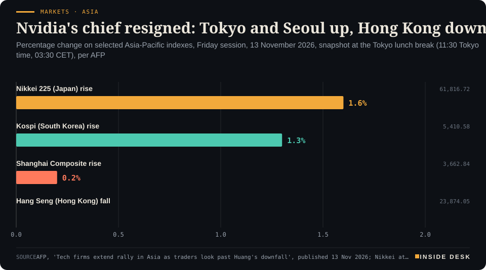
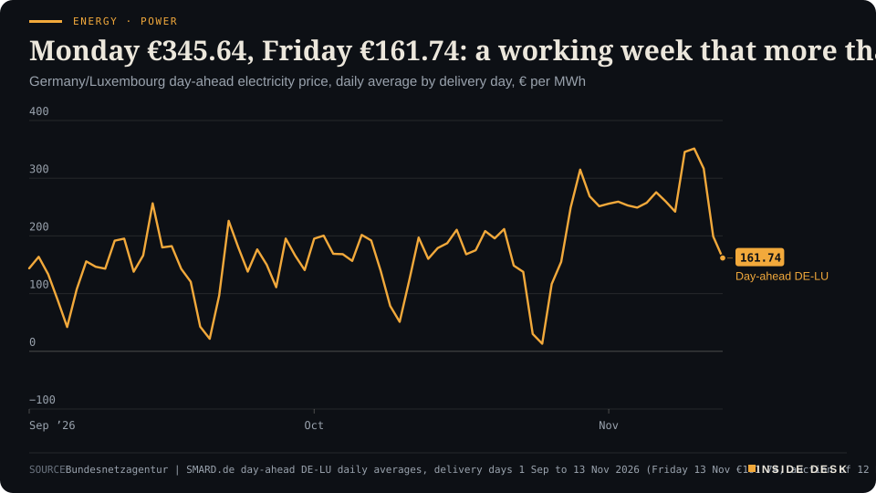
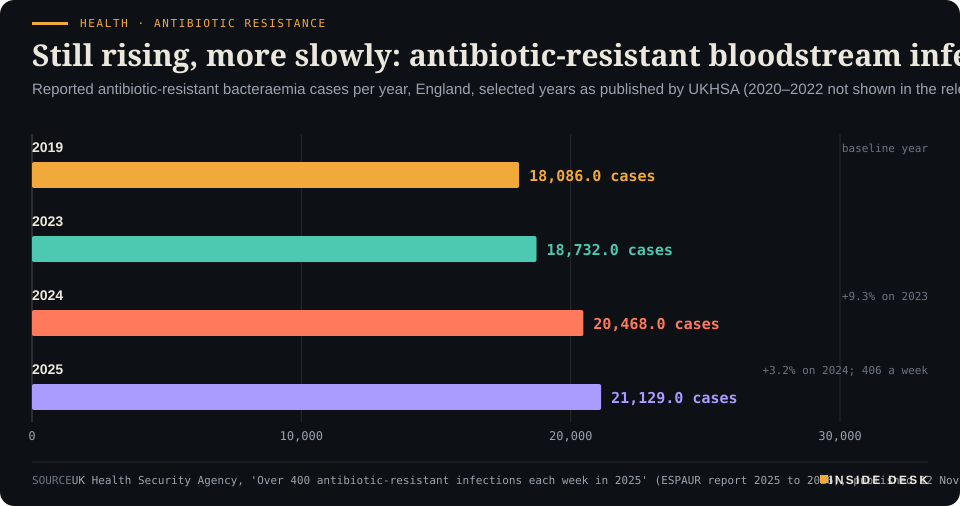

Inside Desk ePaper, Morning ePaper · Fri 13 Nov 2026
Friday, 13 November 2026Always free
Inside Desk
Morning ePaperAvailable 06:30 CET · Berlin
Lead · Markets & Macro
Jensen Huang resigned on Thursday. Nvidia's shares fell as far as 14% and closed down 4.3%; its rivals rose; by Friday morning Tokyo and Seoul were higher. The louder story may be the bond market.
Jensen Huang resigned and Nvidia's rivals rose; the heavier move was a ten-year Treasury yield back above 5.1%. Also: a budget settled after 3am, a pipeline around Hormuz under fire, wind that kept its word on your power price, drought in the Mid-South and an antibiotic-resistance ledger that slows but does not turn.
A founder resigned in an afternoon, the bond market moved more than the chip index, and the budget committee worked past 3am; on Friday the weight sat with the dull numbers.
Geo-economics · p. 5
Energy & Industry · p. 10
Climate & Weather · p. 17
The day in one sentenceA founder resigned in an afternoon, the bond market moved more than the chip index, and the budget committee worked past 3am; on Friday the weight sat with the dull numbers.
ContentsInside Desk · Morning ePaper13 November 2026
Jensen Huang resigned and Nvidia's rivals rose; the heavier move was a ten-year Treasury yield back above 5.1%. Also: a budget settled after 3am, a pipeline around Hormuz under fire, wind that kept its word on your power price, drought in the Mid-South and an antibiotic-resistance ledger that slows but does not turn.
11 edition pieces · 11 desks · Available 06:30 CET, 13 November 2026
22 ePaper extras, added , 13 November. They appear only in the ePaper and carry their own time.
The website edition follows at 08:30.
The ePaper rhythm
06:30 Morning ePaper (website edition at 08:30)
17:30 Evening ePaper, updated live until 22:30 with an “Updated” time and a Latest page
Sun 10:00 The Sunday Magazine
Berlin time. Every issue is free.
How to read it
Swipe, use the arrow keys or the page strip. Tap any headline for the reading view. Press / to search, t for contents, +/− to zoom. Download the PDF.
LeadInside Desk · Morning ePaper13 November 2026
Markets & Macro · Lead · 3 min
Jensen Huang resigned on Thursday. Nvidia's shares fell as far as 14% and closed down 4.3%; its rivals rose; by Friday morning Tokyo and Seoul were higher. The louder story may be the bond market.
On Thursday Nvidia’s board announced that its co-founder Jensen Huang had resigned as chief executive with immediate effect, after days of reports about his private life, including an affair with a woman whom US authorities suspect of spying for China1,5. Chief financial officer Colette Kress takes over on an interim basis while the company looks for a permanent successor1. It is the kind of headline that is supposed to end a boom.
What the tape actually said. Nvidia’s shares fell as much as 14% during the session, the steepest such fall since the DeepSeek scare of 27 January 2025, according to CNBC TV185. Dip buyers then arrived, and the stock closed down 4.3%1,3. Its competitors rose: Advanced Micro Devices gained 5.9% and Broadcom 5.5%1. The S&P 500 fell 0.35% to 7,592.40, the Nasdaq Composite 0.39% to 25,366.09 and the Dow 0.36% to 52,297.091. A semiconductor index ended only 0.5% lower1. Reuters notes that after its slide from the 6 October record, Nvidia trades at about 12 times expected earnings, its lowest valuation since 20121.
“The market’s absorbed this reasonably well,” Peter Tuz of Chase Investment Counsel told Reuters, while adding that “there’s a lot that remains unknown”1. That is about right. The money did not leave the industry; it moved down the street.
Friday morning in Asia. Seoul, Tokyo and Taipei, home to the region’s largest AI-linked companies, climbed between 1.3% and 3%, AFP reported, with SK hynix, Samsung, TSMC and Kioxia well up2. At the Tokyo midday break the Nikkei 225 was up 1.6% at 61,816.72, the Kospi up 1.3% at 5,410.58 and the Shanghai Composite up 0.2% at 3,662.84, while Hong Kong’s Hang Seng was down 0.6% at 23,874.052. Seoul had opened 2.05% higher and drifted back before noon4. Bloomberg had the MSCI Asia Pacific index up 0.7%, led by Taiwan and South Korea3.
“There’s actually a modicum of certainty now that the leadership change has been confirmed,” Tim Waterer of KCM Trade told Bloomberg3. Markets dislike not knowing more than they dislike bad news; a resignation, however messy, is a known.
LeadInside Desk · Morning ePaper13 November 2026
Markets · AsiaFriday morning in Asia: Tokyo and Seoul up, Hong Kong down, the morning after Nvidia's chief executive resignedPercentage change on selected Asia-Pacific indexes, Friday session, 13 November 2026, snapshot at the Tokyo lunch break (11:30 Tokyo time, 03:30 CET), per AFP

Bar chart of Friday 13 November 2026 percentage changes in Asia at the Tokyo midday break, about 03:30 CET, per AFP: Nikkei 225 up 1.6 percent to 61,816.72, Kospi up 1.3 percent to 5,410.58, Shanghai Composite up 0.2 percent to 3,662.84 and Hang Seng down 0.6 percent to 23,874.05. These are intraday snapshot levels, not closes.
Source: AFP, 'Tech firms extend rally in Asia as traders look past Huang's downfall', published 13 Nov 2026; Nikkei at the Tokyo midday break (11:30 Tokyo time, 03:30 CET); intraday snapshot, not closing levels; retrieved 13 Nov 2026 · reported figures · CSV
The quieter, heavier weight: rates. The bigger move on Thursday was not in a chip stock but in Treasuries. The two-year yield rose 13.96 basis points to 4.867%, its highest since 14 October, and the ten-year 11.58 basis points to 5.105%, after touching 5.1169%1. Traders in fed funds futures price 29 basis points of Federal Reserve rate rises in December, Reuters reports, implying slim odds of a half-point move1. Brent settled up $3.06, or 3.3%, at $95.82 a barrel after attacks on Saudi energy infrastructure and President Donald Trump’s comment that Washington does not need a deal with Iran1. On Friday the sell-off reached Asian bonds: Japan’s ten-year yield rose seven basis points to 2.870% and Australia’s eight to 5.12%3.
Desk arithmetic: at Thursday’s close the gap between the US two-year and ten-year yields was about 24 basis points (5.105% minus 4.867%).
Why this matters more than the boardroom. A boardroom scandal touches the shareholders of one company. A higher discount rate touches every share, every mortgage and every company’s refinancing at once. “The macro underpinnings are the ones driving Treasuries right now,” TD Securities’ Gennadiy Goldberg told Bloomberg3. The dollar index rose 0.3% to 103.18 on Thursday, a fresh 19-month high, Reuters reports, and the dollar broke back above 160 yen for the first time since September1,2.
Into Europe. Thursday ended with the pan-European index at 664.01, up 0.14% after an all-time intraday high of 666.581. At 03:59 CET, Euro Stoxx 50 futures were down 0.3%3. Futures for the S&P 500 were up 0.3% and for the Nasdaq 100 up 0.4% at the same point3. That is a mixed open in prospect, not a verdict.
For you. If you own a world index fund, Thursday showed both its weakness and its strength. The weakness is concentration: one founder’s private life can move a trillion-dollar line in your portfolio. The strength is that the same fund also holds the competitors and suppliers who invoice the same data centres. The orders are placed by companies, not by a chief executive’s reputation. The figures above are intraday snapshots and closes as reported; Friday’s European session had not begun at the time of writing. Nothing here is investment advice.
Geo-economicsInside Desk · Morning ePaper13 November 2026
Geo-economics · 2 min
Brent settled $3.06 higher at $95.82 after Houthi claims against Saudi Arabia's East-West pipeline and Yanbu. No damage has been confirmed. The bypass is now part of the risk.
When a strait closes, the trade does not stop wanting to move; it looks for a longer road. For Saudi crude that road is the East-West pipeline, which ends at the Red Sea port of Yanbu. AFP describes it as increasingly important because it lets the world’s largest crude exporter reach customers while Iran blockades the Strait of Hormuz2. On Thursday, the detour itself became the headline.
Yemen’s Houthis said they had attacked a pumping station on the line, an oil facility in Yanbu and an Aramco building in Riyadh1. Their spokesman said one drone “targeted Pumping Station No. 7”, and a ballistic missile the Yanbu facility2. The Saudi-led coalition said it intercepted and destroyed two drones, one in the Riyadh region and one in the Eastern Province1. Nobody has confirmed damage at the pumping station or at Yanbu2. These are one side’s claims, and should be read as such.
The market did not wait for confirmation. Brent settled at $95.82 a barrel, up $3.06 or 3.3%; WTI at $88.74, up $2.211. By 03:44 CET on Friday, Straits showed Brent at $95.863. Context matters, though: both benchmarks were still down about 2.5% on the week, and OPEC+ data showed crude output rose in October, driven by higher Saudi production1. The physical picture in the strait is unchanged and grim: IMF PortWatch recorded three transits on 8 November against a pre-crisis baseline of 85 a day3.
The useful distinction is between a price and a flow. Thursday priced a claim; a confirmed halt at Yanbu or on the line would be a flow problem, and a larger one, because the pipeline is the main route around Hormuz2. “Investors are growing weary from hearing the same song on peace prospects,” Timothy Snyder of Matador Economics told Reuters1.
For you: a $3 move in one day is not yet a heating-oil or pump-price story; a sustained outage would be2. The figures to watch are loadings at Yanbu, not the volume of the statements. …
Geo-economics · Short item · ePaper extra, added
Ukraine's largest sunflower-oil producer has halted all its oil extraction plants after Russian drone strikes. It keeps shipping from stock.
Some industries can pause like a shop closing for lunch. Oilseed crushing is not one of them. Kernel, Ukraine’s largest producer and exporter of sunflower oil, said on Thursday it had shut down operations at all of its oil extraction plants after Russian drones damaged production buildings, equipment and storage tanks1,2.
The company’s reasoning is an engineer’s, not a politician’s. …
Geo-economics · Brief · ePaper extra, added
A drone attack set fire to the port area of Ust-Luga on Russia’s Baltic coast, injuring three workers, Leningrad region governor Aleksandr Drozdenko said; he also reported a power station cut off and 150 drones shot down over the region1. Ukraine’s General Staff said the tank network “suffered the most damage”, with five tanks hit1. Ust-Luga is a major outlet for oil, oil products and grain1,2.
Reuters’ Thursday oil report noted the strike as crude settled $3 higher on Gulf attacks2. “The tit-for-tat exchanges between Russia and Ukraine and attacks on shipping by the IRGC are beginning to add … price pressure,” said Timothy Snyder of Matador Economics2.
For you: ports are where wars meet invoices. Watch loadings, not communiqués. Nothing here is investment advice.
Markets & MacroInside Desk · Morning ePaper13 November 2026
Markets & Macro · Short item · ePaper extra, added
Friday brings October's US producer price index. After a week in which two-year yields jumped and Fed officials talked of more rises, the dull wholesale number carries more weight than usual.
The speeches have been made; on Friday the invoices speak. The United States publishes its producer price index for October, and economists polled by Dow Jones expect a rise of 0.4% on the month and 6.6% on the year, NDTV Profit reports1. Producer prices are what companies charge each other: the steel, freight and packaging long before anything reaches a shop shelf.
The bond market comes to the number already bruised. A sell-off that began on Tuesday with hotter-than-expected consumer prices carried the two-year Treasury yield up 13.96 basis points on Thursday to 4.867%, its highest since 14 October, and the ten-year to 5.105%2,3. Fed funds futures price 29 basis points of rate rises in December, Reuters reports, which leaves only slim odds of a half-point step2.
The officials have not tried to talk that down. New York Fed President John Williams said on Thursday that inflation remains high and that policymakers have to take further action, according to Bloomberg3. San Francisco Fed President Mary Daly said further rises would probably be needed, Bloomberg reported4.
So the week’s headlines were about a chip company’s chief executive, while the week’s pricing was about the cost of money. A producer price index is unglamorous by design; it is a survey of what firms actually charged. That is exactly why markets watch it. Nothing here is investment advice.
Markets & Macro · Brief · ePaper extra, added
The US ten-year yield rose 11.58 basis points on Thursday to 5.105%2. On Friday Asia caught up: by 11:59 Tokyo time (03:59 CET) Japan’s ten-year yield had risen seven basis points to 2.870% and Australia’s eight basis points to 5.12%, according to Bloomberg, while the US ten-year was little changed at 5.13%1. Treasuries themselves were largely steady on Friday1. Desk arithmetic: at that point Australia’s ten-year, at 5.12%, sat just one basis point below America’s at 5.13%. Borrowing costs are a single global plumbing system; a pressure change in one pipe is felt in the others by morning. Watch the Bund at Frankfurt’s open. Nothing here is investment advice.
Politics & InstitutionsInside Desk · Morning ePaper13 November 2026
Politics & Institutions · Podium vs Print · 2 min
The SPD's parliamentary leader said the coalition had cleared the big chunks of the 2027 budget. The finance ministry's supplement shows how: one provision line, and housing benefit kept but not raised.
Podium
“"große Brocken" ("big chunks") cleared”
Matthias Miersch, leader of the SPD parliamentary group, as reported by dpa via Handelsblatt, Wednesday 11 November 2026, after the coalition's budget talks
Print+€600 million
New title 'Globale Mehrausgabe – BKGG und WoGG': €300 million reverses the housing-benefit cuts while keeping the suspension of indexation in 2027; a further €300 million reverses the cuts to the child supplement.
Federal Ministry of Finance, supplement to the clean-up template for the budget committee (Ausschussdrucksache zu 5000), Dated 11 November 2026, for the committee session of 12 November
The podium. After Wednesday night’s coalition talks, SPD parliamentary leader Matthias Miersch said the partners had managed to clear “große Brocken”, big chunks, and stressed above all that cuts to family benefits had been dropped1. Housing benefit and the child supplement would largely stay as they are, he said, according to tagesschau3.
The print. The finance ministry’s 23-page supplement to its clean-up template turns that into a single new line: a “global extra expense” of €600 million2,4. The note beneath it splits it in two. €300 million reverses the cuts to housing benefit “while keeping the suspension of indexation in 2027”; another €300 million reverses the cuts to the child supplement2. The money sits in one provision that may be drawn on, with the finance ministry’s consent, to cover extra needs in the child-benefit and housing-benefit titles2. Elsewhere in the same document, the line for the basic-income benefit is cut by €1.06 billion, from €27.70 billion to €26.64 billion, to reflect developments since the draft and the government’s October autumn projection2.
The gap. Both are true. The cuts were reversed; the benefit was not raised. Housing benefit goes to 1.3 million households, and tagesschau reports its level will not rise for at least a year3. The FAZ adds the cost on the other side of the ledger: the forgone savings and the dropped plastics tax weigh on later years, and the €10.7 billion reserve from which the ministry hoped to save about €4 billion for 2028 could roughly halve4. Desk arithmetic: €600 million is about 11% of the €5.4 billion the electricity-tax cut for everyone would cost, which is still unfunded1.
For you. If you receive housing benefit, plan on the same amount next year, not more2,3. If you are waiting for a lower electricity tax, the print still has no line for it; the coalition leaders meet again on Tuesday1.
Politics & Institutions · Short item · ePaper extra, added
The coalition's amendment leaves a plain line where next year's sugar-tax revenue used to be. The FAZ counts what the compromises cost in later years.
Budgets speak in dashes as well as digits. In the coalition groups’ amendment for the 2027 budget, the sugar-tax revenue for 2027 is now “ein schlichter Strich”, a plain dash, the FAZ reports1. The tax on heavily sweetened drinks moves from 1 July 2027 to 1 January 20282.
Politics & InstitutionsInside Desk · Morning ePaper13 November 2026
The Bundestag’s budget committee did its work the way it always does: in order, and late. The digital ministry’s chapter, Einzelplan 24, came up 21st, after a session that started later than planned because of disagreements between the coalition partners, and was passed shortly after 3am, Tagesspiegel Background reports1. Minister Karsten Wildberger’s budget grows from €1.36 billion to €1.52 billion, about €157 million more than last year, and comes with seven work assignments from the MPs, who also trimmed one item1.
For you: the headlines go to tax rows; the night shift goes to chapters like this. The full Bundestag votes on the budget between 24 and 27 November2.
Psychology & BehaviourInside Desk · Morning ePaper13 November 2026
Psychology & Behaviour · 2 min
A Psychonomic Bulletin & Review brief report finds three distinct ways people turn 'likely' and 'doubtful' into decisions. The finding is useful; the press release's 90 is really two experiments of 41 and 49.
The Annex reads the method behind the headline. Today’s: a brief report by Hidehito Honda, Hirokazu Kumazaki and Kazuhiro Ueda, published on 12 November in Psychonomic Bulletin & Review, on how people with and without autism spectrum disorder (ASD) turn probability words such as “likely” or “doubtful” into numbers, and into decisions1.
The design. Participants read a hypothetical scenario: a friend is considering an expensive migraine treatment, and a doctor describes its chance of success either as a number (“a 30% chance”) or in words that lean positive (“it is possible”) or negative (“it is unlikely to succeed”)2. They said how strongly they would recommend it, and separately translated each verbal phrase into a number1,2. A hierarchical Bayesian model, followed by cluster analysis, sorted people by how much the wording’s direction and their own numerical translation drove their choice1.
The headcount, read closely. The university release says 48 people with ASD and 90 without2. The abstract is more precise: Experiment 1 had 48 participants with ASD and 41 without “in the final analyses”, and Experiment 2 an independent sample of 49 without ASD1. Desk arithmetic: 41 + 49 = 90, so the totals agree, but the direct comparison inside one experiment is 48 against 41. That is a small study, and the journal labels it a brief report1.
The result. Three profiles1,2. One, mostly people with ASD, was swayed more by positive or negative framing and less by the numbers they had inferred. A second, mostly people without ASD, leaned on the inferred numbers. A third, mixed, weighed both2. Participants with ASD also gave more similar numbers to different phrases1. …
Psychology & Behaviour · Short item · ePaper extra, added
The 2025–2026 Healthy Minds Study, 67,477 students at 107 colleges, continues a multiyear improvement, with large needs still on the books.
The 2025–2026 Healthy Minds Study, based on responses from 67,477 students at 107 US colleges and universities, found 34% screened positive for moderate or severe depression, down from 37% in the previous report1. Moderate or severe anxiety fell from 32% to 30%, suicidal ideation from 11% to 10%1. Positive mental health, measured through relationships, self-esteem, purpose and optimism, rose from 36% to 43%1.
Researchers at Paris Lodron University Salzburg surveyed 194 adults in Austria and Germany online: 96 who had abrupt “sleep starts”, or hypnic jerks, plus at least one other symptom weekly, and 98 controls1. The sleep-starts group reported poorer sleep quality, more severe insomnia, more unhelpful beliefs about sleep, and higher anxiety and depressive symptoms1. Together with age and gender, those factors were associated with 26.9% of the differences in how often people had sleep starts1. Participants reported more sleep starts in periods of stress and emotional strain; lack of sleep mattered less1.
The caveats are the authors’ own: cross-sectional self-report, and home-made questionnaire items that “now need to be confirmed with validated instruments and objective sleep recordings,” says first author Tanja Grünberger1. “For most people, sleep starts are a harmless feature of falling asleep,” says senior author Manuel Schabus1. If yours come with real distress, that is worth mentioning to your GP.
Energy & IndustryInside Desk · Morning ePaper13 November 2026
Energy & Industry · 2 min
Thursday's wind came in within a tenth of a per cent of the forecast. Five auctions, read in a row, show what that is worth.
On Thursday morning we told you the regulator’s forecast expected about 479 GWh of wind for the day. The meters have now had the whole day. Onshore and offshore turbines together delivered about 480.0 GWh on Thursday, against 479.4 GWh forecast1. Desk arithmetic: that is about 0.1% more than promised, and about 3.3 times Wednesday’s 145.6 GWh1.
The total hid a swap. Onshore wind came in at about 324.8 GWh, roughly 7% under its forecast; offshore delivered about 155.2 GWh, roughly 19% over1. Desk arithmetic, both. Land disappointed, sea compensated, and the sum landed where the forecasters said it would. Nobody gave a speech about it.
Five auctions in a row. Read the week as a ledger and the effect is plain. Delivery on Monday 9 November averaged €345.64 per megawatt hour for Germany and Luxembourg; Tuesday a record €351.48; Wednesday €316.65; Thursday €199.05; Friday €161.742. Desk arithmetic: the five-day average is €274.91, against €258.83 for Monday to Friday of the week before, and Friday is about 54% below Tuesday’s record2.
Energy & Industry · Short item · ePaper extra, added
TTF closed Thursday near €93.69. Troll, storage and a colder week ahead did the work; oil barely noticed.
Thursday morning, gas was having a quiet third day of gains. By the evening it was not quiet at all. The Dutch TTF benchmark ended late European trading up 7.88% at €93.693 per megawatt hour, after touching a low of €86.045 in the early morning (06:04 CET) and climbing steadily from there1. Britain’s NBP gained 8.09% to 233.520 pence per therm; EU carbon allowances rose 0.93% to €90.39 a tonne1.
Three reasons were offered, none of them dramatic on its own. Temperatures across Europe are expected to fall from 17 November, with further cold spells possible in late November and early December2. Norwegian flows fell as outages worsened, notably at Troll, where the operator Gassco said the duration remained uncertain2; on Wednesday it had put the Troll outage at 7.3 million cubic metres a day until Friday3. And storage is thin: EU reserves were below 72% against a five-year seasonal average of 89%, and Germany’s below 60%2.
Oil, meanwhile, went the other way. …
Energy & Industry · Brief · ePaper extra, added
US crude inventories rose by 4.7 million barrels to 414.4 million barrels in the week to 6 November, the Energy Information Administration said on Thursday; analysts polled by Reuters had expected a draw of 1.1 million1. Softer demand for refined products and a jump in imports did it1.
By 03:42 CET on Friday, Brent was at $95.41 a barrel, down 1 cent, and WTI at $88.521. Brent is set to end the week 2.4% lower, after a 16% plunge the week before1. Attacks on Gulf shipping continue, and “the oil market is priced to perfection at this point,” said Chris Brankin of the brokerage MiTrade1.
A weekly stock count from a statistics office is duller than a headline from the Gulf. This week it carried more weight. Nothing here is investment advice.
Money, FX & CommitteesInside Desk · Morning ePaper13 November 2026
Money, FX & Committees · 2 min
One of Germany's big mortgage brokers looked at its third-quarter clients. Repayments rose, incomes kept pace, and the real gatekeeper turned out to be the deposit.
Every time bond yields jump, the headline asks whether you can still afford a home. The Frankfurt mortgage broker Hüttig & Rompf has published an answer from its own files, and it is more interesting than the headline1.
The monthly payment held. Owner-occupiers financing through the broker in the third quarter paid an average monthly instalment of €2,005, 6.2% more than a year earlier. Yet that instalment took 27.8% of household income, against 27.4% a year before, because the people borrowing had higher average incomes1. The total cost of the average property bought or built rose 6.9% to €555,0291.
The deposit did the work. Owner-occupiers brought in 17.7% more of their own money than a year earlier, and their equity ratio rose 2.8 percentage points to 30.7%1. Desk arithmetic: 30.7% of €555,029 is roughly €170,000. “The real hurdle is the equity,” managing director Benjamin Papo said (our translation), adding that many people find it hard to save enough in the current economic climate1.
Rates, and how people lock them. Ten-year fixed mortgage rates averaged above 4% in the third quarter, driven by a ten-year Bund yield of more than 3.6% at the end of September, and eased slightly in October, the broker says1. Borrowers have responded by locking in: 85.2% of owner-occupier loans carried a ten-year fixed rate, ten percentage points more than a year earlier1. Investors, who had held back in the second quarter, returned: their share of financings rose from 15.7% to 21.0%, back to the usual level of about 20%1.
For you. These are one broker’s clients, not the whole market, so read them as a well-kept ledger rather than a census. The lesson is plain and old-fashioned: the deposit is the part of a mortgage you control, and it is built in years, not in a rate cycle. Papo’s advice is to clarify early how much equity you have and to secure terms once the property and the financing fit1. Nothing here is investment advice.
Money, FX & Committees · Short item · ePaper extra, added
The yen slipped past 160 for the first time since September. Tokyo's currency official called the moves 'too fast'. For travellers and savers the number is a reminder of who sets exchange rates: mostly interest rates.
The dollar broke back above 160 yen this week for the first time since the start of September, on bets that the Federal Reserve will keep raising rates into the new year, AFP reports2. By Friday lunchtime in Tokyo it had eased back: AFP had it at 159.89 yen and Bloomberg at 159.912,3.
The reason it eased is a ministry, not a market. …
Money, FX & Committees · Brief · ePaper extra, added
Spot gold fell 2.77% on Thursday to $3,877.04 an ounce, Reuters reports, on a day when the US ten-year yield climbed to 5.105% and the dollar index hit a 19-month high1. Gold pays no interest, so when bonds pay more, holding it costs more. On Friday it steadied after a three-session decline: by 11:59 Tokyo time (03:59 CET) it was up 0.9% at $3,913.71, according to Bloomberg2. Desk arithmetic: that is about $37 above Thursday’s level, about a third of the day’s fall. If gold is your household’s insurance, two days tell you about the weather, not the policy. Nothing here is investment advice.
Ordinary & Inherited LifeInside Desk · Morning ePaper13 November 2026
Ordinary & Inherited Life · 2 min
The season's first two prices are in. One barely moved; the other is the dull arithmetic of growers who are giving up.
The Christmas markets have not all opened yet, but the first price list has. A mug of classic red Glühwein, without the deposit, costs €4.60 on average across Germany this year, according to the Coupons.de price comparison reported by CHIP on Thursday1. Last year it was €4.54; in 2023 it was €3.941. The most common price found was €41.
Desk arithmetic: that is 6 cents, or about 1.3%, more than last year, and 66 cents, or about 17%, more than three years ago. The headline writers will find “record prices” in it. The ledger finds a price that has nearly stopped climbing, after two years that did most of the damage.
Where you drink matters more than when. The south is dearest at €4.81 on average, the west and north both €4.57, the east cheapest at €4.471. Braunschweig, Gotha, Görlitz, Magdeburg, Ludwigshafen and Wismar start at €3.50; in Munich it is mostly €5 to €7.50, and at Berlin’s Gedächtniskirche up to €7.501. Desk arithmetic: the cheapest mug and the dearest are €4 apart, about six times the whole rise since 2023. Stall holders point to pitch fees, staff, energy, security and ingredients1.
The tree is the bigger item. A running metre of Nordmann fir, the most popular tree, should cost about €25 to €33 this season, up from €23 to €30 last year, the Association of Natural Christmas Trees said2. Desk arithmetic: a two-metre tree therefore runs to about €50 to €66. The reasons given are production, staff and logistics costs and a shrinking supply, as growers cut back or stop altogether2. About 16 million natural trees are sold in Germany each year, roughly 80% of them home-grown2.
For you. Smaller markets away from the big tourist squares are usually cheaper, and not every stall charges the top price; it is worth walking past two before you buy at the third1. Buyers are choosing smaller trees of 1.50 to 2 metres, the growers say, partly because flats are getting smaller2. The season will cost what it costs. It costs less if you read the price board first.
Ordinary & Inherited Life · Short item · ePaper extra, added
Germany revalued all its land for the first time in almost 60 years. The statistics office has now published what the tax offices found.
If you own a flat, a house or a field, you filled in a form for the property tax reform. On Thursday the Federal Statistical Office published what all those forms add up to: the first statistics of property-tax values, from the first complete revaluation of land in Germany in almost 60 years, as of 1 January 20221.
The count covers more than 35 million so-called economic units: about 31 million plots, built and unbuilt, and 4.4 million farms and forests1. Of the plots, 81.3% belong outright to a single person or a married couple; of the farms and forests, 73.6%1. The cities are different. …
Ordinary & Inherited Life · Brief · ePaper extra, added
Tonies has recalled a batch of its audio figure “Helene Fischer – Die schönsten Kinderlieder”, article number 11003054, sold from 7 October 2026, Stiftung Warentest reported on Thursday1. Small parts can come loose from the figure’s shoes, and there is a choking risk1. The figures are meant for children from two years1.
Tonies asks parents to keep the figure out of children’s reach even if it looks fine1. There is no indication that other Tonie figures are affected1. You can return it to the shop or to Tonies directly; a returns portal is being set up, and you can then choose a refund or a voucher for the online shop1.
A recall is not a scandal. It is the system working: a batch number, a notice, a refund.
Tech & ComputeInside Desk · Morning ePaper13 November 2026
Tech & Compute · 2 min
Outlook, Teams and the rest of Microsoft 365 were disrupted for more than five hours on Thursday. The cause, so far, is the most ordinary kind: servers failing their own health checks.
On Thursday evening, European time, the dull machinery of office life stopped for a lot of people at once. Outage tracker Down Detector showed a spike in Microsoft 365 problems around 1pm New York time (19:00 CET), with nearly 130,000 reports covering Word, Excel, PowerPoint, Outlook and Teams, as well as SharePoint and OneDrive; the Copilot assistant was hit too1. Disruption lasted more than five hours, and reports had fallen to about 13,000 five hours after the peak1.
What Microsoft says happened. A portion of its infrastructure was “experiencing elevated load”, and a number of servers were “unexpectedly unavailable” after a problem caused them to fail automated checks1,2. A spokesperson said the company “had no indication of a cyber-attack”1. Late on Thursday Microsoft said restored servers had remained stable, that it was shifting traffic to alternate routes, and that users “may experience a gradual recovery” as their clients reconnect1. It was also assessing whether reverting “the small number of recent configuration updates” it had identified could help1. TechCrunch notes that Microsoft’s previous major incident, in September, was blamed on a “core authentication configuration” issue2.
Why one fault spreads. Mark Gregory of RMIT University described the mechanism: if part of a pool of servers fails, every user crowds onto the rest, “and that overloads them. And then they go down”1. The outage also broke connectors that OpenAI’s and Anthropic’s AI tools use to reach Microsoft 3651. The more services lean on one another, the further a single misstep travels.
For you. Nothing here was a hack, and nobody needs to panic. But the lesson is the same one every payroll office learnt long ago: keep a second channel. A personal email address your colleagues know, a phone number for the people you must reach, and important documents saved locally rather than only in the cloud. …
Tech & Compute · Short item · ePaper extra, added
Nvidia's challenger beat its own guidance and raised its forecast on the day Nvidia lost its chief executive. The contract book is enormous; the losses are still real.
The AI chip maker Cerebras reported third-quarter revenue of $210.8 million on Thursday, up 55% on a year earlier, and “core” revenue, its own adjusted measure, of $230.9 million, up 70%1. Its cloud business grew fastest: GAAP cloud and services revenue of $141.9 million was up 265%1. The company expects fourth-quarter core revenue of about $310 million to $330 million and raised its full-year core forecast to $940 million to $960 million; Bloomberg says the quarterly forecast exceeded analysts’ estimates1,2.
The order book is the striking line: $26.1 billion of remaining performance obligations at 30 September, and 700 megawatts of data-centre capacity secured for delivery by the end of 2027, including new capacity in Norway and Finland1. Desk arithmetic: the contract book is roughly 124 times the quarter’s GAAP revenue.
The ledger has a second column. On a GAAP basis Cerebras lost $224.1 million from operations, an operating margin of minus 106%, and $161.2 million net; even on its own core measure the operating margin was minus 14%1. It holds $7.8 billion of cash, restricted cash and short-term investments1. The release also flags its dependence on a small number of significant customers, including OpenAI1.
So read it as a business with a very large promise and a very real bill. A contract is not cash until it is invoiced and paid, and a forecast is the company’s, not ours. On a week when one founder’s departure shook the industry’s leader, the competitor’s numbers are a reminder that the build-out is run on contracts, not personalities.
Tech & ComputeInside Desk · Morning ePaper13 November 2026
Tech & Compute · Brief · ePaper extra, added
AustralianSuper, the country’s largest pension fund, ran out of coding tokens within three days last month and is considering a range of open-weight AI models to rein in rising costs, Bloomberg reports1. The options under review reportedly include models developed in China2. Open-weight models can be downloaded and run on a firm’s own infrastructure, which gives more control over costs and data but hands the owner the hardware, security and maintenance2. A tool that is cheap in a pilot can become a large line once hundreds of staff use it all day2. This is the unglamorous phase of any technology: the invoice arrives, and someone in finance asks what it buys. That question, not the demo, decides whether a tool stays.
Health & CareInside Desk · Morning ePaper13 November 2026
Health & Care · 2 min
UKHSA's annual ESPAUR count shows resistant bloodstream infections still climbing, NHS antibiotic use down by a tenth since 2019, and a gap between rich and poor areas that no prescription pad closes.
England’s UK Health Security Agency published its annual surveillance report on antibiotic use and resistance (ESPAUR) on Thursday, and the headline is a weekly number: an average of 406 antibiotic-resistant bloodstream infections reported each week in 20251. Over the year that came to 21,129 cases of resistant bacteraemia, up 16.8% from 18,086 in 20191.
Health & Care · Short item · ePaper extra, added
A campaign launched after this year's Kent outbreak has reached fewer than a third of eligible 18- and 19-year-olds, and the deadline for a first dose is 31 December.
After an outbreak of meningitis B in Kent and clusters in Dorset and Berkshire caused three deaths earlier this year, the UK government announced in June a one-off, time-limited programme offering young adults two doses of a MenB vaccine1. UK Health Security Agency figures now show just 28.2% of 18- and 19-year-olds have had a first dose1.
The deadline for that first dose is 31 December; second doses, given at least 28 days later, remain available until 31 March 20271. Those who start tend to finish: almost 70% of first-dose recipients have already had a second1. Eligibility covers everyone born between 1 September 2007 and 31 August 2008, plus under-25s who started university or residential further education for the first time this autumn1. UKHSA says freshers face a risk about seven times higher than peers who do not go to university1.
“MenB vaccines can’t stop all cases, but they are still highly effective,” said Prof Andrew Pollard of the Oxford Vaccine Group, who called the low uptake “very worrying”1. Dr Eliza Gil of the London School of Hygiene & Tropical Medicine noted that invasive MenB typically peaks from December to March1. Some experts argue for reconsidering the December cut-off, and pharmacists for an annual campaign in place of a one-off1.
The overall risk remains low, Dr Gil stresses1. But a vaccine offer is only as good as the appointment book. If someone in your household is eligible, the useful thing to do this week is boring: check the dates and book.
Health & Care · Brief · ePaper extra, added
The European Medicines Agency has begun examining the supply-chain weak points of more than 200 active substances on the EU’s list of critical medicines, according to its 2026 half-year report as reported by Redacción Médica1. Its shortages steering group (MSSG) met six times in the first half of the year, twice as often as a year earlier, and completed two vulnerability analyses with recommendations1. The aim is to catch structural fragility before it becomes an empty pharmacy shelf1.
Spain’s generics association gives the plain arithmetic of fragility: the price of 40 mg furosemide, a common diuretic, has fallen 75% since 2021, while marketed presentations shrank from 19 to 111. “Shortages do not begin on the day a medicine is missing from the pharmacy,” says its secretary general, Elena Casaus (our translation)1. Spain’s health ministry agrees that “the lowest price does not always represent the lowest cost” (our translation)1.
Fewer suppliers is an inventory problem before it is a patient problem, which is why it is worth counting now.
Security & OrderInside Desk · Morning ePaper13 November 2026
Security & Order · 2 min
US envoys say Russia and Ukraine have agreed to bring Europeans into the next round. Putin calls European peacekeepers a "continuation of war". The Kremlin has not confirmed the invitation.
Two days ago, the question was whether Europe would get a seat. On Thursday night, the US envoys said it would. After meeting Vladimir Putin in Moscow, Jared Kushner said Russia and Ukraine had agreed to expand the next round of negotiations to include European countries1. “We cannot conclude this deal without Europeans being at the table,” he said, adding that Putin was “willing to give it a try”2. Steve Witkoff called it “a very big deal”, without saying which countries would take part or in what capacity3.
The other half of the picture came from Moscow. Putin warned Europe not to send peacekeeping troops into Ukraine after any deal, calling that a “continuation of war”, and refused to soften his territorial demands1. He said Washington should work with its allies so they could “finally make up their minds as to what they want: peace or war in Ukraine”1. France 24 notes that the Kremlin itself did not confirm that Putin had agreed to include Europe2.
In Dublin, Volodymyr Zelensky welcomed the change. Europeans would no longer sit “separately” on the sidelines as in Abu Dhabi, he said: “They will have a voice”2. He hopes the agenda will include “some kind of ceasefires”1. An EU official told AFP that representatives of five European capitals and the European Commission also met the envoys2. Kushner said the US was working towards “the largest prisoner exchange of the war”1.
The fighting did not pause for the diplomacy. A Russian drone strike killed two people in Sumy region, five people were injured in Rivne when a drone hit an apartment building, and a man was killed in Russia’s Belgorod region, local officials said1.
Security & Order · Short item · ePaper extra, added
The UN shipping agency's chief wants flag, port and coastal states to act on unsafe vessels in and around the strait. Gulf states are building a forward command in Kuwait.
In a crisis, the rulebook is the first thing to look old-fashioned and the last thing you want to lose. International Maritime Organization Secretary-General Arsenio Dominguez urged member states on 11 November to act on violations of maritime rules around the Strait of Hormuz1. He cited reports of substandard vessels, ships concealing their IMO identification numbers, fraudulent registrations and false flags, and ships transiting without meeting basic requirements such as the SOLAS safety convention1.
“IMO’s technical and operational regulations are there to protect seafarers, ships and the marine environment,” he said. “They must be respected and enforced effectively”1. …
Security & Order · Brief · ePaper extra, added
Norway’s Police Security Service (PST) said on Thursday it expects Russian intelligence to attempt sabotage in the country. “We believe there is good reason to expect that Russian intelligence will carry out sabotage in Norway in the coming year,” said Inger Haugland, who heads its department for state actors1. The most likely targets are defence-related companies and firms that serve them; critical infrastructure such as energy could also be hit1. PST says it has found no sabotage attempts against Norwegian targets so far, but knows that actors linked to Russian intelligence have mapped infrastructure and targets1. Most operations in Europe have used proxies, it notes, some of whom may not know a state is behind them1.
For you: if someone you do not know offers easy money for a small job near a defence firm or an energy site, remember PST’s point about proxies who do not know who they are working for. Say no, and tell the police.
Climate & WeatherInside Desk · Morning ePaper13 November 2026
Climate & Weather · 2 min
Arkansas, Louisiana and Mississippi had their warmest August to October ever. The damage shows up in hay bills, burn bans and a lake 15 feet down.
America’s federal drought service published a status update for Arkansas, Louisiana and Mississippi on Thursday, and its first line is blunt: all three states had their warmest August-to-October period on record, with near-record dryness on top1. Arkansas had its 3rd-driest such period, Louisiana its 4th and Mississippi its 5th1.
The map has followed. According to the US Drought Monitor, 94% of the three-state region is in moderate to exceptional drought, including 97% of Arkansas, almost half of which is in the exceptional category, 95% of Louisiana and 92% of Mississippi1. About 9.2 million residents live in drought, NOAA estimates1. Louisiana went from drought-free to exceptional drought in three months1.
Where it lands. Not in a headline but in a farm ledger. The US Department of Agriculture reports 76% of pastures in the region in poor to very poor condition; ranchers are feeding hay daily and hauling water as stock ponds dry up1. Brewer Lake near Conway, Arkansas, has dropped nearly 15 feet, and some places have imposed mandatory water curtailments and lawn-watering limits1. Dozens of counties and parishes have burn bans1. Arkansas wetlands are short of the water needed to flood fields for the duck season1.
What the river does. On the Mississippi itself, high flows from upstream are temporarily easing low water downstream, but key points such as Baton Rouge remain below their long-term average, the update says1. Without significant rain upstream, levels could fall below normal and affect navigation and industry1.
What the forecasters say. NOAA’s seasonal outlook expects drought to improve across much of the region by the end of January 2027, and possibly to be removed entirely in parts of eastern Mississippi and south-east Louisiana1. Rain in the lower valley rarely lifts the river much, it adds1.
For you. This is the quiet side of climate news: no storm name, no landfall, just a regional office, a weekly map and a list of who is paying. …
Climate & Weather · Short item · ePaper extra, added
Day four at COP31: 44 agenda items have a draft, 48 do not, and the finance paragraph is still a choice between numbers and silence.
Speeches at a climate summit are written for the room. Draft texts are written for the record, and that is where to look. By day four at COP31 in Antalya, more than 100 agenda items had become 44 with some sort of draft text, 11 postponed or deferred and 48 with no text yet, Carbon Brief counts; it calls that “pretty normal” for day four1.
The draft on the global goal on adaptation opens with bracketed, not yet agreed, language on the “era of 1.5C overshoot”, which “makes adaptation more difficult”1. Further down sit three options for the pledge made at COP30 last year to triple adaptation finance: no text at all; moving the discussion to a separate climate finance work programme; or defining the tripling as a baseline of $40bn in 2025 rising to $120bn by 20351. The “no text” option, Carbon Brief notes, means some countries do not want finance mentioned in this track at all1.
On cutting emissions, the draft for the mitigation work programme disagrees over whether it should run until 2030 or 20401. It also carries bracketed text on a permanent “mitigation committee”, an idea pushed by Switzerland; Panama, speaking for the AILAC group, said such a body “could be helpful”, while Carbon Brief’s reporter heard opposition from the Arab Group and South Africa1.
For you, the useful habit is the dull one: ignore the adjectives from the podium and watch which of the three options survives in paragraph 63. A number in a treaty text can be counted later. Silence cannot.
Climate & WeatherInside Desk · Morning ePaper13 November 2026
Climate & Weather · Brief · ePaper extra, added
While the Mid-South dries out, the western Corn Belt has the opposite problem. Iowa’s corn harvest was 72% complete by Sunday 8 November, 17 percentage points behind average; Nebraska’s was 74%, 10 points behind1. From 11 September to 9 November much of the western and northern Corn Belt had 10 to 15 inches of rain1.
September brought Iowa 7.83 inches, 4.35 above normal, its fourth-wettest September in 154 years of records; in the week to 8 November the state had 1.47 inches, more than triple the normal 0.481. A drier pattern is now helping, DTN reports, though slow-drying fields and roads will still slow the last leg1.
A late harvest is not a lost one. It is a longer one, and the cost shows up later, in the farm accounts rather than the headlines.
Charts and dataInside Desk · Morning ePaper13 November 2026
Charts and data
Energy · PowerMonday €345.64, Friday €161.74: a working week that more than halvedGermany/Luxembourg day-ahead electricity price, daily average by delivery day, € per MWh

Line chart of the daily average German-Luxembourg day-ahead electricity price from 1 September to 13 November 2026, in euros per megawatt hour. It falls to €13.12 on Sunday 25 October, climbs to €314.85 on Thursday 29 October, and stays between €242.13 and €275.64 on every delivery day from 2 to 8 November. In the week of 9 November it reads €345.64 on Monday, a record €351.48 on Tuesday, €316.65 on Wednesday and €199.05 on Thursday. The latest value is €161.74 for delivery on Friday 13 November, €37.31 below Thursday, €189.74 below Tuesday's record and the lowest delivery day since €155.12 on Tuesday 27 October.
Source: Bundesnetzagentur | SMARD.de day-ahead DE-LU daily averages, delivery days 1 Sep to 13 Nov 2026 (Friday 13 Nov €161.74, auction of 12 Nov), retrieved 13 Nov 2026, 05:17 CET · CC BY 4.0 · CSV
Latest values
Series
Value
Date
Chart
Day-ahead DE-LU
161.74
13 Nov 2026
Monday €345.64, Friday €161.74: a working week that more than halved
Last data point of each series in the charts above, from the Inside Desk data archive. Sources under each chart.
Back pageInside Desk · Morning ePaper13 November 2026
Before you close the tab
The day in one sentence
A founder resigned in an afternoon, the bond market moved more than the chip index, and the budget committee worked past 3am; on Friday the weight sat with the dull numbers.
One thing you can do this week
This weekend, when the heating is on anyway, look at the small device on each radiator and note what it shows: a display, a number, or only a sealed glass tube. Write the readings on the back of last year's heating statement. It takes five minutes, and when the next statement arrives you will be reading it against your own notes rather than against a feeling.
A habit, not advice.
What went right
At Culbin Forest in Moray, 18 volunteers have moved 3,400 one-flowered wintergreens, one of Britain's rarest wildflowers, away from a shoreline where 2 to 3 metres of land had collapsed into the sea 1. In the UK the plant survives at just seven sites, only three of them with healthy populations, according to Plantlife Scotland 1. Volunteers cut out whole sections of soil so the fungi the plant depends on travelled with it 1. "Any survival will be a success," said Iain Macdonald of NatureScot 1. The money came from the Scottish government's nature restoration fund 1. A spade, a soil block and a public fund are not glamorous; they are how a species gets a second address.
In euros at home
By the end of 2026 most heat cost allocators in buildings with central heating or hot water and at least two flats must be readable remotely; from 1 January 2027 that is mandatory for the majority of such buildings, the Verbraucherzentrale Bayern says 2. If the remote-readable devices are missing, tenants may cut the consumption-based share of their heating bill by 3%, and by a further 3% if the required monthly consumption information is missing or incomplete; the two cuts can be combined 2. The statement must also arrive no later than twelve months after the billing period ends 2. Desk arithmetic: on every €100 of consumption-based heating costs, the two cuts together come to €6.
Rules as summarised by Verbraucherzentrale Bayern on 4 Nov 2026; your statement and building decide what applies. Nothing here is advice.
Small words
Heizkostenverteiler (heat cost allocator)
The small device on a radiator that records how much of the building's heat that radiator used, so the bill can be split by use rather than by floor space alone 2. A remote-readable one sends its figures without anyone ringing your doorbell.
Commentary for information only. Not investment, legal, tax, medical or political advice. Inside Desk is free and reader-supported. Every number is sourced in the piece it appears in.
This issue has been updated.
All articles in this edition
Markets & Macro · 3 min read
Minus 14%, then minus 4.3%: Nvidia loses its founder, and the market keeps its nerve
Jensen Huang resigned on Thursday. Nvidia's shares fell as far as 14% and closed down 4.3%; its rivals rose; by Friday morning Tokyo and Seoul were higher. The louder story may be the bond market.
On Thursday Nvidia’s board announced that its co-founder Jensen Huang had resigned as chief executive with immediate effect, after days of reports about his private life, including an affair with a woman whom US authorities suspect of spying for China1,5. Chief financial officer Colette Kress takes over on an interim basis while the company looks for a permanent successor1. It is the kind of headline that is supposed to end a boom.
What the tape actually said. Nvidia’s shares fell as much as 14% during the session, the steepest such fall since the DeepSeek scare of 27 January 2025, according to CNBC TV185. Dip buyers then arrived, and the stock closed down 4.3%1,3. Its competitors rose: Advanced Micro Devices gained 5.9% and Broadcom 5.5%1. The S&P 500 fell 0.35% to 7,592.40, the Nasdaq Composite 0.39% to 25,366.09 and the Dow 0.36% to 52,297.091. A semiconductor index ended only 0.5% lower1. Reuters notes that after its slide from the 6 October record, Nvidia trades at about 12 times expected earnings, its lowest valuation since 20121.
“The market’s absorbed this reasonably well,” Peter Tuz of Chase Investment Counsel told Reuters, while adding that “there’s a lot that remains unknown”1. That is about right. The money did not leave the industry; it moved down the street.
Friday morning in Asia. Seoul, Tokyo and Taipei, home to the region’s largest AI-linked companies, climbed between 1.3% and 3%, AFP reported, with SK hynix, Samsung, TSMC and Kioxia well up2. At the Tokyo midday break the Nikkei 225 was up 1.6% at 61,816.72, the Kospi up 1.3% at 5,410.58 and the Shanghai Composite up 0.2% at 3,662.84, while Hong Kong’s Hang Seng was down 0.6% at 23,874.052. Seoul had opened 2.05% higher and drifted back before noon4. Bloomberg had the MSCI Asia Pacific index up 0.7%, led by Taiwan and South Korea3.
Markets · AsiaFriday morning in Asia: Tokyo and Seoul up, Hong Kong down, the morning after Nvidia's chief executive resignedPercentage change on selected Asia-Pacific indexes, Friday session, 13 November 2026, snapshot at the Tokyo lunch break (11:30 Tokyo time, 03:30 CET), per AFP
Bar chart of Friday 13 November 2026 percentage changes in Asia at the Tokyo midday break, about 03:30 CET, per AFP: Nikkei 225 up 1.6 percent to 61,816.72, Kospi up 1.3 percent to 5,410.58, Shanghai Composite up 0.2 percent to 3,662.84 and Hang Seng down 0.6 percent to 23,874.05. These are intraday snapshot levels, not closes.
Source: AFP, 'Tech firms extend rally in Asia as traders look past Huang's downfall', published 13 Nov 2026; Nikkei at the Tokyo midday break (11:30 Tokyo time, 03:30 CET); intraday snapshot, not closing levels; retrieved 13 Nov 2026 · reported figures · CSV
“There’s actually a modicum of certainty now that the leadership change has been confirmed,” Tim Waterer of KCM Trade told Bloomberg3. Markets dislike not knowing more than they dislike bad news; a resignation, however messy, is a known.
The quieter, heavier weight: rates. The bigger move on Thursday was not in a chip stock but in Treasuries. The two-year yield rose 13.96 basis points to 4.867%, its highest since 14 October, and the ten-year 11.58 basis points to 5.105%, after touching 5.1169%1. Traders in fed funds futures price 29 basis points of Federal Reserve rate rises in December, Reuters reports, implying slim odds of a half-point move1. Brent settled up $3.06, or 3.3%, at $95.82 a barrel after attacks on Saudi energy infrastructure and President Donald Trump’s comment that Washington does not need a deal with Iran1. On Friday the sell-off reached Asian bonds: Japan’s ten-year yield rose seven basis points to 2.870% and Australia’s eight to 5.12%3.
Desk arithmetic: at Thursday’s close the gap between the US two-year and ten-year yields was about 24 basis points (5.105% minus 4.867%).
Why this matters more than the boardroom. A boardroom scandal touches the shareholders of one company. A higher discount rate touches every share, every mortgage and every company’s refinancing at once. “The macro underpinnings are the ones driving Treasuries right now,” TD Securities’ Gennadiy Goldberg told Bloomberg3. The dollar index rose 0.3% to 103.18 on Thursday, a fresh 19-month high, Reuters reports, and the dollar broke back above 160 yen for the first time since September1,2.
Into Europe. Thursday ended with the pan-European index at 664.01, up 0.14% after an all-time intraday high of 666.581. At 03:59 CET, Euro Stoxx 50 futures were down 0.3%3. Futures for the S&P 500 were up 0.3% and for the Nasdaq 100 up 0.4% at the same point3. That is a mixed open in prospect, not a verdict.
For you. If you own a world index fund, Thursday showed both its weakness and its strength. The weakness is concentration: one founder’s private life can move a trillion-dollar line in your portfolio. The strength is that the same fund also holds the competitors and suppliers who invoice the same data centres. The orders are placed by companies, not by a chief executive’s reputation. The figures above are intraday snapshots and closes as reported; Friday’s European session had not begun at the time of writing. Nothing here is investment advice.
Desk comment A founder can resign in an afternoon. A customer's order book takes longer to change its mind.
The road around Hormuz has a pumping station, and on Thursday someone claimed to have hit it
Brent settled $3.06 higher at $95.82 after Houthi claims against Saudi Arabia's East-West pipeline and Yanbu. No damage has been confirmed. The bypass is now part of the risk.
When a strait closes, the trade does not stop wanting to move; it looks for a longer road. For Saudi crude that road is the East-West pipeline, which ends at the Red Sea port of Yanbu. AFP describes it as increasingly important because it lets the world’s largest crude exporter reach customers while Iran blockades the Strait of Hormuz2. On Thursday, the detour itself became the headline.
Yemen’s Houthis said they had attacked a pumping station on the line, an oil facility in Yanbu and an Aramco building in Riyadh1. Their spokesman said one drone “targeted Pumping Station No. 7”, and a ballistic missile the Yanbu facility2. The Saudi-led coalition said it intercepted and destroyed two drones, one in the Riyadh region and one in the Eastern Province1. Nobody has confirmed damage at the pumping station or at Yanbu2. These are one side’s claims, and should be read as such.
The market did not wait for confirmation. Brent settled at $95.82 a barrel, up $3.06 or 3.3%; WTI at $88.74, up $2.211. By 03:44 CET on Friday, Straits showed Brent at $95.863. Context matters, though: both benchmarks were still down about 2.5% on the week, and OPEC+ data showed crude output rose in October, driven by higher Saudi production1. The physical picture in the strait is unchanged and grim: IMF PortWatch recorded three transits on 8 November against a pre-crisis baseline of 85 a day3.
The useful distinction is between a price and a flow. Thursday priced a claim; a confirmed halt at Yanbu or on the line would be a flow problem, and a larger one, because the pipeline is the main route around Hormuz2. “Investors are growing weary from hearing the same song on peace prospects,” Timothy Snyder of Matador Economics told Reuters1.
For you: a $3 move in one day is not yet a heating-oil or pump-price story; a sustained outage would be2. The figures to watch are loadings at Yanbu, not the volume of the statements. Nothing here is investment advice.
Desk comment A detour is only a detour until it becomes the road. Then it needs guarding like one.
Eight plants, 3.5 million tonnes, and the seed purchases stopped: Kernel switches off its crushers
Ukraine's largest sunflower-oil producer has halted all its oil extraction plants after Russian drone strikes. It keeps shipping from stock.
Some industries can pause like a shop closing for lunch. Oilseed crushing is not one of them. Kernel, Ukraine’s largest producer and exporter of sunflower oil, said on Thursday it had shut down operations at all of its oil extraction plants after Russian drones damaged production buildings, equipment and storage tanks1,2.
The company’s reasoning is an engineer’s, not a politician’s. Extraction is “a continuous technological cycle with an elevated fire hazard”, it said, so a strike on running equipment threatens a large fire and the lives of staff1. The plants have been taken down under standard safety protocols, and Kernel has also suspended all seed purchases1.
The scale: Kernel owns eight plants with combined annual capacity to process 3.5 million tonnes of sunflower seeds1. Two of them, in Kharkiv region, have been out of action since 20221. Before the full-scale invasion, Kernel ranked first in the world in sunflower-oil production, at about 9% of global output, and in exports, at about 12%1.
The steadying part is in the small print. Kernel says it remains operationally and financially stable, continues to ship existing inventory from its warehouses and is meeting its obligations to Ukrainian farmers and partners1. In fiscal 2026 its net income rose 35% to $322 million on revenue of $4.404 billion1.
For you: the cooking oil on your shelf is already pressed. What matters next is how long the crushers stay cold, and whether farmers who planned to sell seed to Kernel find another buyer.
Appears only in the ePaper · Commentary for information only. Not advice.
Geo-economics · Brief · ePaper extra, added
Five tanks at Ust-Luga: the Baltic's oil and grain gate takes a hit
Ukraine says its drones damaged fuel storage at Russia's Ust-Luga port. The port ships oil, oil products and grain.
A drone attack set fire to the port area of Ust-Luga on Russia’s Baltic coast, injuring three workers, Leningrad region governor Aleksandr Drozdenko said; he also reported a power station cut off and 150 drones shot down over the region1. Ukraine’s General Staff said the tank network “suffered the most damage”, with five tanks hit1. Ust-Luga is a major outlet for oil, oil products and grain1,2.
Reuters’ Thursday oil report noted the strike as crude settled $3 higher on Gulf attacks2. “The tit-for-tat exchanges between Russia and Ukraine and attacks on shipping by the IRGC are beginning to add … price pressure,” said Timothy Snyder of Matador Economics2.
For you: ports are where wars meet invoices. Watch loadings, not communiqués. Nothing here is investment advice.
Appears only in the ePaper · Commentary for information only. Not advice.
Markets & Macro · Short item · ePaper extra, added
6.6% expected: America's producer prices meet a nervous bond market
Friday brings October's US producer price index. After a week in which two-year yields jumped and Fed officials talked of more rises, the dull wholesale number carries more weight than usual.
The speeches have been made; on Friday the invoices speak. The United States publishes its producer price index for October, and economists polled by Dow Jones expect a rise of 0.4% on the month and 6.6% on the year, NDTV Profit reports1. Producer prices are what companies charge each other: the steel, freight and packaging long before anything reaches a shop shelf.
The bond market comes to the number already bruised. A sell-off that began on Tuesday with hotter-than-expected consumer prices carried the two-year Treasury yield up 13.96 basis points on Thursday to 4.867%, its highest since 14 October, and the ten-year to 5.105%2,3. Fed funds futures price 29 basis points of rate rises in December, Reuters reports, which leaves only slim odds of a half-point step2.
The officials have not tried to talk that down. New York Fed President John Williams said on Thursday that inflation remains high and that policymakers have to take further action, according to Bloomberg3. San Francisco Fed President Mary Daly said further rises would probably be needed, Bloomberg reported4.
So the week’s headlines were about a chip company’s chief executive, while the week’s pricing was about the cost of money. A producer price index is unglamorous by design; it is a survey of what firms actually charged. That is exactly why markets watch it. Nothing here is investment advice.
Appears only in the ePaper · Commentary for information only. Not advice.
Markets & Macro · Brief · ePaper extra, added
2.870% in Tokyo, 5.12% in Sydney: the Treasury sell-off travels
Thursday's jump in US yields did not stay in New York. By Friday lunchtime in Tokyo, Japanese and Australian bonds had followed.
The US ten-year yield rose 11.58 basis points on Thursday to 5.105%2. On Friday Asia caught up: by 11:59 Tokyo time (03:59 CET) Japan’s ten-year yield had risen seven basis points to 2.870% and Australia’s eight basis points to 5.12%, according to Bloomberg, while the US ten-year was little changed at 5.13%1. Treasuries themselves were largely steady on Friday1. Desk arithmetic: at that point Australia’s ten-year, at 5.12%, sat just one basis point below America’s at 5.13%. Borrowing costs are a single global plumbing system; a pressure change in one pipe is felt in the others by morning. Watch the Bund at Frankfurt’s open. Nothing here is investment advice.
Appears only in the ePaper · Commentary for information only. Not advice.
Politics & Institutions · 2 min read
Podium vs Print: "big chunks" and a €600 million line called a global extra expense
The SPD's parliamentary leader said the coalition had cleared the big chunks of the 2027 budget. The finance ministry's supplement shows how: one provision line, and housing benefit kept but not raised.
Podium
“"große Brocken" ("big chunks") cleared”
Matthias Miersch, leader of the SPD parliamentary group, as reported by dpa via Handelsblatt, Wednesday 11 November 2026, after the coalition's budget talks
Print+€600 million
New title 'Globale Mehrausgabe – BKGG und WoGG': €300 million reverses the housing-benefit cuts while keeping the suspension of indexation in 2027; a further €300 million reverses the cuts to the child supplement.
Federal Ministry of Finance, supplement to the clean-up template for the budget committee (Ausschussdrucksache zu 5000), Dated 11 November 2026, for the committee session of 12 November
The podium. After Wednesday night’s coalition talks, SPD parliamentary leader Matthias Miersch said the partners had managed to clear “große Brocken”, big chunks, and stressed above all that cuts to family benefits had been dropped1. Housing benefit and the child supplement would largely stay as they are, he said, according to tagesschau3.
The print. The finance ministry’s 23-page supplement to its clean-up template turns that into a single new line: a “global extra expense” of €600 million2,4. The note beneath it splits it in two. €300 million reverses the cuts to housing benefit “while keeping the suspension of indexation in 2027”; another €300 million reverses the cuts to the child supplement2. The money sits in one provision that may be drawn on, with the finance ministry’s consent, to cover extra needs in the child-benefit and housing-benefit titles2. Elsewhere in the same document, the line for the basic-income benefit is cut by €1.06 billion, from €27.70 billion to €26.64 billion, to reflect developments since the draft and the government’s October autumn projection2.
The gap. Both are true. The cuts were reversed; the benefit was not raised. Housing benefit goes to 1.3 million households, and tagesschau reports its level will not rise for at least a year3. The FAZ adds the cost on the other side of the ledger: the forgone savings and the dropped plastics tax weigh on later years, and the €10.7 billion reserve from which the ministry hoped to save about €4 billion for 2028 could roughly halve4. Desk arithmetic: €600 million is about 11% of the €5.4 billion the electricity-tax cut for everyone would cost, which is still unfunded1.
For you. If you receive housing benefit, plan on the same amount next year, not more2,3. If you are waiting for a lower electricity tax, the print still has no line for it; the coalition leaders meet again on Tuesday1.
Desk comment Speeches move chunks. Budgets move lines, and the line is where you find out what the chunk weighed.
Politics & Institutions · Short item · ePaper extra, added
A dash under 2027: the sugar tax waits, the plastics tax goes, and the reserve shrinks
The coalition's amendment leaves a plain line where next year's sugar-tax revenue used to be. The FAZ counts what the compromises cost in later years.
Budgets speak in dashes as well as digits. In the coalition groups’ amendment for the 2027 budget, the sugar-tax revenue for 2027 is now “ein schlichter Strich”, a plain dash, the FAZ reports1. The tax on heavily sweetened drinks moves from 1 July 2027 to 1 January 20282.
It comes back with three rates per 100 millilitres: €0.25 for five to just under seven grams of total sugar, €0.30 up to just under nine grams, and €0.35 from nine grams1. In later years it is still expected to raise about €1.15 billion1.
The new plastic-packaging tax will not be levied next year; the plan had been €550 a tonne from mid-20272. The FAZ puts its expected yield at €800 million in the first year and €1.5 billion a year later1; tagesschau cites €670 million for 2027 from the draft law2. The two figures differ, so treat both as estimates.
The bill arrives later. The FAZ says the forgone savings and the dropped plastics tax will weigh on the budget permanently, and that the reserve of €10.7 billion, from which the ministry wanted to save about €4 billion for 2028, could roughly halve1. It notes the compromise came on the same day the German Council of Economic Experts urged the government to bring spending and revenue back into line1.
For you: the lemonade price stays as it is until 2028. The 2027 budget, about €555 billion in the draft, goes to the Bundestag for its final vote in the week from 23 November3.
Shortly after 3am, item 21: the digital ministry gets €1.52 billion and seven tasks
The budget committee reached the digital ministry's chapter deep into Thursday night, and passed it with conditions.
The Bundestag’s budget committee did its work the way it always does: in order, and late. The digital ministry’s chapter, Einzelplan 24, came up 21st, after a session that started later than planned because of disagreements between the coalition partners, and was passed shortly after 3am, Tagesspiegel Background reports1. Minister Karsten Wildberger’s budget grows from €1.36 billion to €1.52 billion, about €157 million more than last year, and comes with seven work assignments from the MPs, who also trimmed one item1.
For you: the headlines go to tax rows; the night shift goes to chapters like this. The full Bundestag votes on the budget between 24 and 27 November2.
Appears only in the ePaper · Commentary for information only. Not advice.
Psychology & Behaviour · 2 min read
The Annex: 48 autistic adults, 90 others, one migraine treatment, and a sample size that depends on which page you read
A Psychonomic Bulletin & Review brief report finds three distinct ways people turn 'likely' and 'doubtful' into decisions. The finding is useful; the press release's 90 is really two experiments of 41 and 49.
The Annex reads the method behind the headline. Today’s: a brief report by Hidehito Honda, Hirokazu Kumazaki and Kazuhiro Ueda, published on 12 November in Psychonomic Bulletin & Review, on how people with and without autism spectrum disorder (ASD) turn probability words such as “likely” or “doubtful” into numbers, and into decisions1.
The design. Participants read a hypothetical scenario: a friend is considering an expensive migraine treatment, and a doctor describes its chance of success either as a number (“a 30% chance”) or in words that lean positive (“it is possible”) or negative (“it is unlikely to succeed”)2. They said how strongly they would recommend it, and separately translated each verbal phrase into a number1,2. A hierarchical Bayesian model, followed by cluster analysis, sorted people by how much the wording’s direction and their own numerical translation drove their choice1.
The headcount, read closely. The university release says 48 people with ASD and 90 without2. The abstract is more precise: Experiment 1 had 48 participants with ASD and 41 without “in the final analyses”, and Experiment 2 an independent sample of 49 without ASD1. Desk arithmetic: 41 + 49 = 90, so the totals agree, but the direct comparison inside one experiment is 48 against 41. That is a small study, and the journal labels it a brief report1.
The result. Three profiles1,2. One, mostly people with ASD, was swayed more by positive or negative framing and less by the numbers they had inferred. A second, mostly people without ASD, leaned on the inferred numbers. A third, mixed, weighed both2. Participants with ASD also gave more similar numbers to different phrases1. The authors are careful: participants varied in age and intellectual ability, so the differences cannot be attributed to ASD alone, and what places someone in a cluster is still unknown2.
For you. The finding that travels is not about autism: “even subtle differences in wording can influence people’s decisions,” says Ueda2. When a clinician tells you something is “unlikely”, it is fair, and not rude, to ask what that means in numbers, and to say back what you understood.
Desk comment 'Likely' is a word; 30% is a number; a good doctor checks which one you heard.
Psychology & Behaviour · Short item · ePaper extra, added
34% down from 37%: America's students report less depression, and 7% now talk to a chatbot
The 2025–2026 Healthy Minds Study, 67,477 students at 107 colleges, continues a multiyear improvement, with large needs still on the books.
The 2025–2026 Healthy Minds Study, based on responses from 67,477 students at 107 US colleges and universities, found 34% screened positive for moderate or severe depression, down from 37% in the previous report1. Moderate or severe anxiety fell from 32% to 30%, suicidal ideation from 11% to 10%1. Positive mental health, measured through relationships, self-esteem, purpose and optimism, rose from 36% to 43%1.
“The data are truly encouraging,” says co-principal investigator Justin Heinze, before adding that “clearly there is still a lot of need”1. A quarter of students reported non-suicidal self-injury in the past year, 28% screened at risk for an eating disorder, and two-thirds said emotional difficulties had hurt their academic work in the previous four weeks1.
Care reaches many: 61% of those screening positive for depression or anxiety received counselling, medication or both1. The barriers are mundane: time (23%), money (19%), not knowing where to go (12%)1. And 7% received counselling or support from an AI chatbot such as ChatGPT, which the team says raises questions about safety and effectiveness1.
The companion staff survey is the quieter story: of 5,557 faculty and staff, 48% had a one-to-one conversation with a student about mental health, only about half felt confident recognising distress, and 28% reported high or very high burnout1. Only 30% said their institution prioritised employee mental health, against 61% for students1. A support system is people, and people need support too.
The jolt as you drift off: 194 adults, and a link between 'sleep starts' and anxiety
A Salzburg survey in PLOS Mental Health finds people who often startle awake while falling asleep report worse sleep and more anxiety. Cause and effect remain open.
Researchers at Paris Lodron University Salzburg surveyed 194 adults in Austria and Germany online: 96 who had abrupt “sleep starts”, or hypnic jerks, plus at least one other symptom weekly, and 98 controls1. The sleep-starts group reported poorer sleep quality, more severe insomnia, more unhelpful beliefs about sleep, and higher anxiety and depressive symptoms1. Together with age and gender, those factors were associated with 26.9% of the differences in how often people had sleep starts1. Participants reported more sleep starts in periods of stress and emotional strain; lack of sleep mattered less1.
The caveats are the authors’ own: cross-sectional self-report, and home-made questionnaire items that “now need to be confirmed with validated instruments and objective sleep recordings,” says first author Tanja Grünberger1. “For most people, sleep starts are a harmless feature of falling asleep,” says senior author Manuel Schabus1. If yours come with real distress, that is worth mentioning to your GP.
Appears only in the ePaper · Commentary for information only. Not advice.
Energy & Industry · 2 min read
480 GWh promised, 480 GWh delivered: the week the wind kept its word and the price more than halved
Thursday's wind came in within a tenth of a per cent of the forecast. Five auctions, read in a row, show what that is worth.
On Thursday morning we told you the regulator’s forecast expected about 479 GWh of wind for the day. The meters have now had the whole day. Onshore and offshore turbines together delivered about 480.0 GWh on Thursday, against 479.4 GWh forecast1. Desk arithmetic: that is about 0.1% more than promised, and about 3.3 times Wednesday’s 145.6 GWh1.
The total hid a swap. Onshore wind came in at about 324.8 GWh, roughly 7% under its forecast; offshore delivered about 155.2 GWh, roughly 19% over1. Desk arithmetic, both. Land disappointed, sea compensated, and the sum landed where the forecasters said it would. Nobody gave a speech about it.
Five auctions in a row. Read the week as a ledger and the effect is plain. Delivery on Monday 9 November averaged €345.64 per megawatt hour for Germany and Luxembourg; Tuesday a record €351.48; Wednesday €316.65; Thursday €199.05; Friday €161.742. Desk arithmetic: the five-day average is €274.91, against €258.83 for Monday to Friday of the week before, and Friday is about 54% below Tuesday’s record2.
Energy · PowerMonday €345.64, Friday €161.74: a working week that more than halvedGermany/Luxembourg day-ahead electricity price, daily average by delivery day, € per MWh
Line chart of the daily average German-Luxembourg day-ahead electricity price from 1 September to 13 November 2026, in euros per megawatt hour. It falls to €13.12 on Sunday 25 October, climbs to €314.85 on Thursday 29 October, and stays between €242.13 and €275.64 on every delivery day from 2 to 8 November. In the week of 9 November it reads €345.64 on Monday, a record €351.48 on Tuesday, €316.65 on Wednesday and €199.05 on Thursday. The latest value is €161.74 for delivery on Friday 13 November, €37.31 below Thursday, €189.74 below Tuesday's record and the lowest delivery day since €155.12 on Tuesday 27 October.
Source: Bundesnetzagentur | SMARD.de day-ahead DE-LU daily averages, delivery days 1 Sep to 13 Nov 2026 (Friday 13 Nov €161.74, auction of 12 Nov), retrieved 13 Nov 2026, 05:17 CET · CC BY 4.0 · CSV
Friday started windy. In the first four hours of Friday, provisional SMARD data show about 142.0 GWh of wind, 114.6 GWh of it onshore1. Desk arithmetic: four hours of Friday night produced almost as much wind power as the whole of Wednesday. The offshore forecast for the full day is about 137.4 GWh; the onshore and solar forecasts for Friday had not been published when we checked at 05:17 CET1. So we cannot tell you how the rest of the day will run, and we will not guess.
For you. A cheap week is not made by policy or by press release. It is made by a forecast, an auction and a meter, published in that order and in public. On a dynamic tariff, the prices for Friday were fixed on Thursday and are already visible hour by hour2. On a fixed tariff, your supplier bought long ago and nothing changes this week. Nothing here is investment advice.
Desk comment A forecast you can check is worth more than a promise you cannot.
Energy & Industry · Short item · ePaper extra, added
Plus 7.9% in a day: Norway coughs, the forecast cools, and Europe's gas finds its nerves
TTF closed Thursday near €93.69. Troll, storage and a colder week ahead did the work; oil barely noticed.
Thursday morning, gas was having a quiet third day of gains. By the evening it was not quiet at all. The Dutch TTF benchmark ended late European trading up 7.88% at €93.693 per megawatt hour, after touching a low of €86.045 in the early morning (06:04 CET) and climbing steadily from there1. Britain’s NBP gained 8.09% to 233.520 pence per therm; EU carbon allowances rose 0.93% to €90.39 a tonne1.
Three reasons were offered, none of them dramatic on its own. Temperatures across Europe are expected to fall from 17 November, with further cold spells possible in late November and early December2. Norwegian flows fell as outages worsened, notably at Troll, where the operator Gassco said the duration remained uncertain2; on Wednesday it had put the Troll outage at 7.3 million cubic metres a day until Friday3. And storage is thin: EU reserves were below 72% against a five-year seasonal average of 89%, and Germany’s below 60%2.
Oil, meanwhile, went the other way. Brent was little changed at $95.41 a barrel at 03:42 CET on Friday and is set for a weekly fall of 2.4% after a 16% drop the week before4. Gas is a local winter problem; oil is a global war problem. This week they were priced separately.
For you: one afternoon on a futures screen is not a heating bill. What it does show is that a cold week, a Norwegian valve and a thin tank are still enough to move the price of next month’s gas by close to 8% in a day. Nothing here is investment advice.
Appears only in the ePaper · Commentary for information only. Not advice.
Energy & Industry · Brief · ePaper extra, added
4.7 million barrels the analysts did not expect, and a Brent that shrugged
America's crude stocks rose when a fall was forecast. Oil heads for a second weekly loss.
US crude inventories rose by 4.7 million barrels to 414.4 million barrels in the week to 6 November, the Energy Information Administration said on Thursday; analysts polled by Reuters had expected a draw of 1.1 million1. Softer demand for refined products and a jump in imports did it1.
By 03:42 CET on Friday, Brent was at $95.41 a barrel, down 1 cent, and WTI at $88.521. Brent is set to end the week 2.4% lower, after a 16% plunge the week before1. Attacks on Gulf shipping continue, and “the oil market is priced to perfection at this point,” said Chris Brankin of the brokerage MiTrade1.
A weekly stock count from a statistics office is duller than a headline from the Gulf. This week it carried more weight. Nothing here is investment advice.
Appears only in the ePaper · Commentary for information only. Not advice.
Money, FX & Committees · 2 min read
€555,029 and a 30.7% deposit: the hurdle to a home is the savings, not the rate
One of Germany's big mortgage brokers looked at its third-quarter clients. Repayments rose, incomes kept pace, and the real gatekeeper turned out to be the deposit.
Every time bond yields jump, the headline asks whether you can still afford a home. The Frankfurt mortgage broker Hüttig & Rompf has published an answer from its own files, and it is more interesting than the headline1.
The monthly payment held. Owner-occupiers financing through the broker in the third quarter paid an average monthly instalment of €2,005, 6.2% more than a year earlier. Yet that instalment took 27.8% of household income, against 27.4% a year before, because the people borrowing had higher average incomes1. The total cost of the average property bought or built rose 6.9% to €555,0291.
The deposit did the work. Owner-occupiers brought in 17.7% more of their own money than a year earlier, and their equity ratio rose 2.8 percentage points to 30.7%1. Desk arithmetic: 30.7% of €555,029 is roughly €170,000. “The real hurdle is the equity,” managing director Benjamin Papo said (our translation), adding that many people find it hard to save enough in the current economic climate1.
Rates, and how people lock them. Ten-year fixed mortgage rates averaged above 4% in the third quarter, driven by a ten-year Bund yield of more than 3.6% at the end of September, and eased slightly in October, the broker says1. Borrowers have responded by locking in: 85.2% of owner-occupier loans carried a ten-year fixed rate, ten percentage points more than a year earlier1. Investors, who had held back in the second quarter, returned: their share of financings rose from 15.7% to 21.0%, back to the usual level of about 20%1.
For you. These are one broker’s clients, not the whole market, so read them as a well-kept ledger rather than a census. The lesson is plain and old-fashioned: the deposit is the part of a mortgage you control, and it is built in years, not in a rate cycle. Papo’s advice is to clarify early how much equity you have and to secure terms once the property and the financing fit1. Nothing here is investment advice.
Desk comment A rate is a price you can shop for. A deposit is a habit you have to have started years ago.
Money, FX & Committees · Short item · ePaper extra, added
160 yen to the dollar, and a finance ministry that has spent ¥15.4 trillion before
The yen slipped past 160 for the first time since September. Tokyo's currency official called the moves 'too fast'. For travellers and savers the number is a reminder of who sets exchange rates: mostly interest rates.
The dollar broke back above 160 yen this week for the first time since the start of September, on bets that the Federal Reserve will keep raising rates into the new year, AFP reports2. By Friday lunchtime in Tokyo it had eased back: AFP had it at 159.89 yen and Bloomberg at 159.912,3.
The reason it eased is a ministry, not a market. Japan’s chief currency official, Atsushi Mimura, said the recent moves looked “too fast”, and Japan spent ¥15.4 trillion ($96.4 billion) on intervention this summer, according to a Bloomberg report cited by CNBC TV181. “Markets are jittery about potential FX intervention whenever we approach the 160 area,” Win Thin of Bank of Nassau 1982 told Bloomberg3.
Behind the drama sits arithmetic about interest. US two-year yields rose 14 basis points on Thursday, and Japan’s ten-year yield, though rising, stood at 2.870% on Friday1,3. Money flows towards the higher rate; a weak yen is the price of that gap.
The euro was little changed at $1.10603. For you, the practical points are modest. If you are planning a trip to Japan or paying a Japanese supplier, the yen is near its weakest against the dollar since September, but an official intervention can move it abruptly, so it is worth not betting the budget on a single day’s rate. And if you hold yen savings, remember they are a bet on two central banks, not one. Nothing here is investment advice.
Appears only in the ePaper · Commentary for information only. Not advice.
Money, FX & Committees · Brief · ePaper extra, added
$3,877, then $3,913: gold's bad Thursday and a small Friday back
Rising yields and a firmer dollar knocked gold down almost 3% in a day. Asia bought a little of it back.
Spot gold fell 2.77% on Thursday to $3,877.04 an ounce, Reuters reports, on a day when the US ten-year yield climbed to 5.105% and the dollar index hit a 19-month high1. Gold pays no interest, so when bonds pay more, holding it costs more. On Friday it steadied after a three-session decline: by 11:59 Tokyo time (03:59 CET) it was up 0.9% at $3,913.71, according to Bloomberg2. Desk arithmetic: that is about $37 above Thursday’s level, about a third of the day’s fall. If gold is your household’s insurance, two days tell you about the weather, not the policy. Nothing here is investment advice.
Appears only in the ePaper · Commentary for information only. Not advice.
Ordinary & Inherited Life · 2 min read
Ordinary Ledger: €4.60 a mug of Glühwein, six cents more than last year, and a Christmas tree that costs €25 to €33 a metre
The season's first two prices are in. One barely moved; the other is the dull arithmetic of growers who are giving up.
The Christmas markets have not all opened yet, but the first price list has. A mug of classic red Glühwein, without the deposit, costs €4.60 on average across Germany this year, according to the Coupons.de price comparison reported by CHIP on Thursday1. Last year it was €4.54; in 2023 it was €3.941. The most common price found was €41.
Desk arithmetic: that is 6 cents, or about 1.3%, more than last year, and 66 cents, or about 17%, more than three years ago. The headline writers will find “record prices” in it. The ledger finds a price that has nearly stopped climbing, after two years that did most of the damage.
Where you drink matters more than when. The south is dearest at €4.81 on average, the west and north both €4.57, the east cheapest at €4.471. Braunschweig, Gotha, Görlitz, Magdeburg, Ludwigshafen and Wismar start at €3.50; in Munich it is mostly €5 to €7.50, and at Berlin’s Gedächtniskirche up to €7.501. Desk arithmetic: the cheapest mug and the dearest are €4 apart, about six times the whole rise since 2023. Stall holders point to pitch fees, staff, energy, security and ingredients1.
The tree is the bigger item. A running metre of Nordmann fir, the most popular tree, should cost about €25 to €33 this season, up from €23 to €30 last year, the Association of Natural Christmas Trees said2. Desk arithmetic: a two-metre tree therefore runs to about €50 to €66. The reasons given are production, staff and logistics costs and a shrinking supply, as growers cut back or stop altogether2. About 16 million natural trees are sold in Germany each year, roughly 80% of them home-grown2.
For you. Smaller markets away from the big tourist squares are usually cheaper, and not every stall charges the top price; it is worth walking past two before you buy at the third1. Buyers are choosing smaller trees of 1.50 to 2 metres, the growers say, partly because flats are getting smaller2. The season will cost what it costs. It costs less if you read the price board first.
Desk comment A price that barely moves is news too. It just never makes the front page.
Ordinary & Inherited Life · Short item · ePaper extra, added
35 million units, 81.3% of plots in private hands: the first full count behind your property tax
Germany revalued all its land for the first time in almost 60 years. The statistics office has now published what the tax offices found.
If you own a flat, a house or a field, you filled in a form for the property tax reform. On Thursday the Federal Statistical Office published what all those forms add up to: the first statistics of property-tax values, from the first complete revaluation of land in Germany in almost 60 years, as of 1 January 20221.
The count covers more than 35 million so-called economic units: about 31 million plots, built and unbuilt, and 4.4 million farms and forests1. Of the plots, 81.3% belong outright to a single person or a married couple; of the farms and forests, 73.6%1. The cities are different. In Hamburg and Berlin, companies and other business entities are the largest owner group by share of total value, at 39.4% and 39.5%; in Saarland private individuals and couples hold 77.6%1.
Five states — Baden-Württemberg, Bavaria, Hamburg, Hesse and Lower Saxony — use their own valuation rules, which is why the office compares only shares, not absolute values, between states1.
The useful part for you is the method, set out in three steps. The tax office sets a property-tax value; multiplying it by a statutory rate gives the assessment amount; your municipality then applies its own multiplier, the Hebesatz, and that produces your bill1. The value is for tax purposes only and can differ from what your property would sell for1. The first two steps are set by the tax office and by law. The third is set by your own municipality, which is where to ask if the bill surprises you.
Appears only in the ePaper · Commentary for information only. Not advice.
Ordinary & Inherited Life · Brief · ePaper extra, added
One Tonie, one batch, small parts on the shoes: check the shelf in the nursery
Tonies has recalled its Helene Fischer children's songs figure, article number 11003054.
Tonies has recalled a batch of its audio figure “Helene Fischer – Die schönsten Kinderlieder”, article number 11003054, sold from 7 October 2026, Stiftung Warentest reported on Thursday1. Small parts can come loose from the figure’s shoes, and there is a choking risk1. The figures are meant for children from two years1.
Tonies asks parents to keep the figure out of children’s reach even if it looks fine1. There is no indication that other Tonie figures are affected1. You can return it to the shop or to Tonies directly; a returns portal is being set up, and you can then choose a refund or a voucher for the online shop1.
A recall is not a scandal. It is the system working: a batch number, a notice, a refund.
Appears only in the ePaper · Commentary for information only. Not advice.
Tech & Compute · 2 min read
130,000 reports, no cyber-attack: Microsoft's mailboxes go dark, and the case for a second channel
Outlook, Teams and the rest of Microsoft 365 were disrupted for more than five hours on Thursday. The cause, so far, is the most ordinary kind: servers failing their own health checks.
On Thursday evening, European time, the dull machinery of office life stopped for a lot of people at once. Outage tracker Down Detector showed a spike in Microsoft 365 problems around 1pm New York time (19:00 CET), with nearly 130,000 reports covering Word, Excel, PowerPoint, Outlook and Teams, as well as SharePoint and OneDrive; the Copilot assistant was hit too1. Disruption lasted more than five hours, and reports had fallen to about 13,000 five hours after the peak1.
What Microsoft says happened. A portion of its infrastructure was “experiencing elevated load”, and a number of servers were “unexpectedly unavailable” after a problem caused them to fail automated checks1,2. A spokesperson said the company “had no indication of a cyber-attack”1. Late on Thursday Microsoft said restored servers had remained stable, that it was shifting traffic to alternate routes, and that users “may experience a gradual recovery” as their clients reconnect1. It was also assessing whether reverting “the small number of recent configuration updates” it had identified could help1. TechCrunch notes that Microsoft’s previous major incident, in September, was blamed on a “core authentication configuration” issue2.
Why one fault spreads. Mark Gregory of RMIT University described the mechanism: if part of a pool of servers fails, every user crowds onto the rest, “and that overloads them. And then they go down”1. The outage also broke connectors that OpenAI’s and Anthropic’s AI tools use to reach Microsoft 3651. The more services lean on one another, the further a single misstep travels.
For you. Nothing here was a hack, and nobody needs to panic. But the lesson is the same one every payroll office learnt long ago: keep a second channel. A personal email address your colleagues know, a phone number for the people you must reach, and important documents saved locally rather than only in the cloud. Gregory put it simply: “it then becomes important to have an alternative”1. And if a message arrives during an outage asking you to “re-verify” your account, treat it with extra suspicion; Microsoft’s own guidance was that recovery would come gradually as clients reconnect1.
Desk comment Resilience is not a product you buy once. It is a second address you keep, and a habit of writing things down.
$26.1 billion promised, $210.8 million booked: Cerebras's quarter
Nvidia's challenger beat its own guidance and raised its forecast on the day Nvidia lost its chief executive. The contract book is enormous; the losses are still real.
The AI chip maker Cerebras reported third-quarter revenue of $210.8 million on Thursday, up 55% on a year earlier, and “core” revenue, its own adjusted measure, of $230.9 million, up 70%1. Its cloud business grew fastest: GAAP cloud and services revenue of $141.9 million was up 265%1. The company expects fourth-quarter core revenue of about $310 million to $330 million and raised its full-year core forecast to $940 million to $960 million; Bloomberg says the quarterly forecast exceeded analysts’ estimates1,2.
The order book is the striking line: $26.1 billion of remaining performance obligations at 30 September, and 700 megawatts of data-centre capacity secured for delivery by the end of 2027, including new capacity in Norway and Finland1. Desk arithmetic: the contract book is roughly 124 times the quarter’s GAAP revenue.
The ledger has a second column. On a GAAP basis Cerebras lost $224.1 million from operations, an operating margin of minus 106%, and $161.2 million net; even on its own core measure the operating margin was minus 14%1. It holds $7.8 billion of cash, restricted cash and short-term investments1. The release also flags its dependence on a small number of significant customers, including OpenAI1.
So read it as a business with a very large promise and a very real bill. A contract is not cash until it is invoiced and paid, and a forecast is the company’s, not ours. On a week when one founder’s departure shook the industry’s leader, the competitor’s numbers are a reminder that the build-out is run on contracts, not personalities.
Appears only in the ePaper · Commentary for information only. Not advice.
Tech & Compute · Brief · ePaper extra, added
Three days of tokens: Australia's biggest pension fund counts its AI bill
AustralianSuper's coding assistants used up their allowance in three days. Now it is pricing cheaper, open-weight models.
AustralianSuper, the country’s largest pension fund, ran out of coding tokens within three days last month and is considering a range of open-weight AI models to rein in rising costs, Bloomberg reports1. The options under review reportedly include models developed in China2. Open-weight models can be downloaded and run on a firm’s own infrastructure, which gives more control over costs and data but hands the owner the hardware, security and maintenance2. A tool that is cheap in a pilot can become a large line once hundreds of staff use it all day2. This is the unglamorous phase of any technology: the invoice arrives, and someone in finance asks what it buys. That question, not the demo, decides whether a tool stays.
Appears only in the ePaper · Commentary for information only. Not advice.
Health & Care · 2 min read
406 a week, rising 3.2% instead of 9.3%: England's antibiotic-resistance ledger slows but does not turn
UKHSA's annual ESPAUR count shows resistant bloodstream infections still climbing, NHS antibiotic use down by a tenth since 2019, and a gap between rich and poor areas that no prescription pad closes.
England’s UK Health Security Agency published its annual surveillance report on antibiotic use and resistance (ESPAUR) on Thursday, and the headline is a weekly number: an average of 406 antibiotic-resistant bloodstream infections reported each week in 20251. Over the year that came to 21,129 cases of resistant bacteraemia, up 16.8% from 18,086 in 20191.
Health · Antibiotic resistanceStill rising, more slowly: antibiotic-resistant bloodstream infections in EnglandReported antibiotic-resistant bacteraemia cases per year, England, selected years as published by UKHSA (2020–2022 not shown in the release)

Bar chart of antibiotic-resistant bacteraemia cases reported in England: 18,086 in 2019, 18,732 in 2023, 20,468 in 2024 and 21,129 in 2025, the latest value, an average of 406 a week. The rise was 9.3 percent from 2023 to 2024 and 3.2 percent from 2024 to 2025.
Source: UK Health Security Agency, 'Over 400 antibiotic-resistant infections each week in 2025' (ESPAUR report 2025 to 2026), published 12 Nov 2026; retrieved 13 Nov 2026 · Contains public sector information licensed under the Open Government Licence v3.0 · CSV
The more interesting line is the slope. Cases rose by 3.2% between 2024 and 2025, from 20,468 to 21,129, against a 9.3% jump the year before1. Estimated deaths among people with a resistant Gram-negative bloodstream infection were broadly level, at 2,318 in 2025 against 2,399 in 20241. Slower is not the same as falling, and UKHSA does not claim it is: “We can’t rely on reducing antibiotic use alone,” said Dr Shona Arora, its interim chief medical adviser1.
The dull machinery is doing its job, though. Total NHS antibiotic use fell 10.7% between 2019 and 2025, from 17.8 to 15.9 defined daily doses per 1,000 inhabitants per day1. Private prescriptions dispensed in community pharmacies, counted separately, fell 20.8% in a year, from 0.61 to 0.481. Preliminary analysis puts about 53,400 hospital admissions linked to Gram-negative bloodstream infections at around £800 million for NHS hospitals in 2023–241.
The burden is unequal. People over 45 accounted for 89.3% of resistant cases, and almost half were in people over 741. The most deprived areas had a rate of 44.4 per 100,000, against 30.8 in the least deprived, 44.2% higher1. By care board, the range ran from 63.3 per 100,000 in North West London to 27.4 in Leicester, Leicestershire and Rutland1.
For you, the agency’s advice is the ordinary kind: take antibiotics only when a health professional has told you to, do not save or share them, return leftovers to a pharmacy, and take up the vaccines you are offered, because an infection prevented needs no antibiotic at all1.
Desk comment The cheapest antibiotic is the infection that never happens; the second cheapest is the course you did not need.
28.2%: England's one-off meningitis B jab for school-leavers is running out of calendar
A campaign launched after this year's Kent outbreak has reached fewer than a third of eligible 18- and 19-year-olds, and the deadline for a first dose is 31 December.
After an outbreak of meningitis B in Kent and clusters in Dorset and Berkshire caused three deaths earlier this year, the UK government announced in June a one-off, time-limited programme offering young adults two doses of a MenB vaccine1. UK Health Security Agency figures now show just 28.2% of 18- and 19-year-olds have had a first dose1.
The deadline for that first dose is 31 December; second doses, given at least 28 days later, remain available until 31 March 20271. Those who start tend to finish: almost 70% of first-dose recipients have already had a second1. Eligibility covers everyone born between 1 September 2007 and 31 August 2008, plus under-25s who started university or residential further education for the first time this autumn1. UKHSA says freshers face a risk about seven times higher than peers who do not go to university1.
“MenB vaccines can’t stop all cases, but they are still highly effective,” said Prof Andrew Pollard of the Oxford Vaccine Group, who called the low uptake “very worrying”1. Dr Eliza Gil of the London School of Hygiene & Tropical Medicine noted that invasive MenB typically peaks from December to March1. Some experts argue for reconsidering the December cut-off, and pharmacists for an annual campaign in place of a one-off1.
The overall risk remains low, Dr Gil stresses1. But a vaccine offer is only as good as the appointment book. If someone in your household is eligible, the useful thing to do this week is boring: check the dates and book.
Appears only in the ePaper · Commentary for information only. Not advice.
Health & Care · Brief · ePaper extra, added
200-plus critical medicines under the microscope: Europe's regulator looks for the weak link before the shelf empties
EMA's shortages group is testing supply chains on the EU's critical-medicines list. A furosemide price down 75% shows why the cheapest tender can be the dearest.
The European Medicines Agency has begun examining the supply-chain weak points of more than 200 active substances on the EU’s list of critical medicines, according to its 2026 half-year report as reported by Redacción Médica1. Its shortages steering group (MSSG) met six times in the first half of the year, twice as often as a year earlier, and completed two vulnerability analyses with recommendations1. The aim is to catch structural fragility before it becomes an empty pharmacy shelf1.
Spain’s generics association gives the plain arithmetic of fragility: the price of 40 mg furosemide, a common diuretic, has fallen 75% since 2021, while marketed presentations shrank from 19 to 111. “Shortages do not begin on the day a medicine is missing from the pharmacy,” says its secretary general, Elena Casaus (our translation)1. Spain’s health ministry agrees that “the lowest price does not always represent the lowest cost” (our translation)1.
Fewer suppliers is an inventory problem before it is a patient problem, which is why it is worth counting now.
Appears only in the ePaper · Commentary for information only. Not advice.
Security & Order · 2 min read
A chair for Europe, a warning about its soldiers: the next round of talks gets bigger
US envoys say Russia and Ukraine have agreed to bring Europeans into the next round. Putin calls European peacekeepers a "continuation of war". The Kremlin has not confirmed the invitation.
Two days ago, the question was whether Europe would get a seat. On Thursday night, the US envoys said it would. After meeting Vladimir Putin in Moscow, Jared Kushner said Russia and Ukraine had agreed to expand the next round of negotiations to include European countries1. “We cannot conclude this deal without Europeans being at the table,” he said, adding that Putin was “willing to give it a try”2. Steve Witkoff called it “a very big deal”, without saying which countries would take part or in what capacity3.
The other half of the picture came from Moscow. Putin warned Europe not to send peacekeeping troops into Ukraine after any deal, calling that a “continuation of war”, and refused to soften his territorial demands1. He said Washington should work with its allies so they could “finally make up their minds as to what they want: peace or war in Ukraine”1. France 24 notes that the Kremlin itself did not confirm that Putin had agreed to include Europe2.
In Dublin, Volodymyr Zelensky welcomed the change. Europeans would no longer sit “separately” on the sidelines as in Abu Dhabi, he said: “They will have a voice”2. He hopes the agenda will include “some kind of ceasefires”1. An EU official told AFP that representatives of five European capitals and the European Commission also met the envoys2. Kushner said the US was working towards “the largest prisoner exchange of the war”1.
The fighting did not pause for the diplomacy. A Russian drone strike killed two people in Sumy region, five people were injured in Rivne when a drone hit an apartment building, and a man was killed in Russia’s Belgorod region, local officials said1.
For you: a wider table is slower, and that is not a flaw. Security arrangements that Europeans must pay for and staff are better argued with them in the room than handed to them afterwards. Watch for a date, a list of names and a prisoner count; those are the parts that can be checked.
Desk comment Being invited to the table is the start of the work, not the end of it. Ask who is on the seating plan.
Security & Order · Short item · ePaper extra, added
False flags, hidden numbers, 239 names on a list: the IMO asks states to police Hormuz shipping
The UN shipping agency's chief wants flag, port and coastal states to act on unsafe vessels in and around the strait. Gulf states are building a forward command in Kuwait.
In a crisis, the rulebook is the first thing to look old-fashioned and the last thing you want to lose. International Maritime Organization Secretary-General Arsenio Dominguez urged member states on 11 November to act on violations of maritime rules around the Strait of Hormuz1. He cited reports of substandard vessels, ships concealing their IMO identification numbers, fraudulent registrations and false flags, and ships transiting without meeting basic requirements such as the SOLAS safety convention1.
“IMO’s technical and operational regulations are there to protect seafarers, ships and the marine environment,” he said. “They must be respected and enforced effectively”1. He called on flag, port and coastal states to take measures within their jurisdictions, and on owners to avoid trade that exposes crews to unacceptable risks1.
The setting is tense. Iran’s Persian Gulf Strait Authority has reportedly expanded its blacklist to 239 vessels1. On 10 November, Gulf Cooperation Council defence ministers agreed to set up a forward headquarters for the bloc’s Unified Military Command in Kuwait1. Iran’s military claims four tankers were struck by explosions in the strait, a figure no maritime authority has confirmed2. Traffic remains a trickle: three transits on 8 November against a pre-crisis baseline of 85 a day, according to IMF PortWatch data cited by Straits2.
For you: unglamorous paperwork, such as registries, flags and identification numbers, is what lets an insurer, a port and a crew know who is on the water. Enforcing it is not a ceasefire, but it is a floor.
Appears only in the ePaper · Commentary for information only. Not advice.
Security & Order · Brief · ePaper extra, added
Mapped, not yet attacked: Norway's security service expects Russian sabotage within a year
PST's updated threat assessment names defence firms and their suppliers as the most likely targets, with energy also at risk.
Norway’s Police Security Service (PST) said on Thursday it expects Russian intelligence to attempt sabotage in the country. “We believe there is good reason to expect that Russian intelligence will carry out sabotage in Norway in the coming year,” said Inger Haugland, who heads its department for state actors1. The most likely targets are defence-related companies and firms that serve them; critical infrastructure such as energy could also be hit1. PST says it has found no sabotage attempts against Norwegian targets so far, but knows that actors linked to Russian intelligence have mapped infrastructure and targets1. Most operations in Europe have used proxies, it notes, some of whom may not know a state is behind them1.
For you: if someone you do not know offers easy money for a small job near a defence firm or an energy site, remember PST’s point about proxies who do not know who they are working for. Say no, and tell the police.
Appears only in the ePaper · Commentary for information only. Not advice.
Climate & Weather · 2 min read
94% in drought, 76% of pastures poor: a record-warm August to October leaves America's Mid-South hauling water to cattle
Arkansas, Louisiana and Mississippi had their warmest August to October ever. The damage shows up in hay bills, burn bans and a lake 15 feet down.
America’s federal drought service published a status update for Arkansas, Louisiana and Mississippi on Thursday, and its first line is blunt: all three states had their warmest August-to-October period on record, with near-record dryness on top1. Arkansas had its 3rd-driest such period, Louisiana its 4th and Mississippi its 5th1.
The map has followed. According to the US Drought Monitor, 94% of the three-state region is in moderate to exceptional drought, including 97% of Arkansas, almost half of which is in the exceptional category, 95% of Louisiana and 92% of Mississippi1. About 9.2 million residents live in drought, NOAA estimates1. Louisiana went from drought-free to exceptional drought in three months1.
Where it lands. Not in a headline but in a farm ledger. The US Department of Agriculture reports 76% of pastures in the region in poor to very poor condition; ranchers are feeding hay daily and hauling water as stock ponds dry up1. Brewer Lake near Conway, Arkansas, has dropped nearly 15 feet, and some places have imposed mandatory water curtailments and lawn-watering limits1. Dozens of counties and parishes have burn bans1. Arkansas wetlands are short of the water needed to flood fields for the duck season1.
What the river does. On the Mississippi itself, high flows from upstream are temporarily easing low water downstream, but key points such as Baton Rouge remain below their long-term average, the update says1. Without significant rain upstream, levels could fall below normal and affect navigation and industry1.
What the forecasters say. NOAA’s seasonal outlook expects drought to improve across much of the region by the end of January 2027, and possibly to be removed entirely in parts of eastern Mississippi and south-east Louisiana1. Rain in the lower valley rarely lifts the river much, it adds1.
For you. This is the quiet side of climate news: no storm name, no landfall, just a regional office, a weekly map and a list of who is paying. It is also how you know where help is needed before the bill comes due.
Desk comment A drought is not an event. It is an invoice that arrives in instalments.
Climate & Weather · Short item · ePaper extra, added
$40 billion, $120 billion, or no text at all: the three options for adaptation money in Antalya's draft
Day four at COP31: 44 agenda items have a draft, 48 do not, and the finance paragraph is still a choice between numbers and silence.
Speeches at a climate summit are written for the room. Draft texts are written for the record, and that is where to look. By day four at COP31 in Antalya, more than 100 agenda items had become 44 with some sort of draft text, 11 postponed or deferred and 48 with no text yet, Carbon Brief counts; it calls that “pretty normal” for day four1.
The draft on the global goal on adaptation opens with bracketed, not yet agreed, language on the “era of 1.5C overshoot”, which “makes adaptation more difficult”1. Further down sit three options for the pledge made at COP30 last year to triple adaptation finance: no text at all; moving the discussion to a separate climate finance work programme; or defining the tripling as a baseline of $40bn in 2025 rising to $120bn by 20351. The “no text” option, Carbon Brief notes, means some countries do not want finance mentioned in this track at all1.
On cutting emissions, the draft for the mitigation work programme disagrees over whether it should run until 2030 or 20401. It also carries bracketed text on a permanent “mitigation committee”, an idea pushed by Switzerland; Panama, speaking for the AILAC group, said such a body “could be helpful”, while Carbon Brief’s reporter heard opposition from the Arab Group and South Africa1.
For you, the useful habit is the dull one: ignore the adjectives from the podium and watch which of the three options survives in paragraph 63. A number in a treaty text can be counted later. Silence cannot.
Appears only in the ePaper · Commentary for information only. Not advice.
Climate & Weather · Brief · ePaper extra, added
72% harvested, 17 points behind: Iowa's corn waits for its fields to dry
The fourth-wettest September in 154 years, and a November week with triple the normal rain.
While the Mid-South dries out, the western Corn Belt has the opposite problem. Iowa’s corn harvest was 72% complete by Sunday 8 November, 17 percentage points behind average; Nebraska’s was 74%, 10 points behind1. From 11 September to 9 November much of the western and northern Corn Belt had 10 to 15 inches of rain1.
September brought Iowa 7.83 inches, 4.35 above normal, its fourth-wettest September in 154 years of records; in the week to 8 November the state had 1.47 inches, more than triple the normal 0.481. A drier pattern is now helping, DTN reports, though slow-drying fields and roads will still slow the last leg1.
A late harvest is not a lost one. It is a longer one, and the cost shows up later, in the farm accounts rather than the headlines.